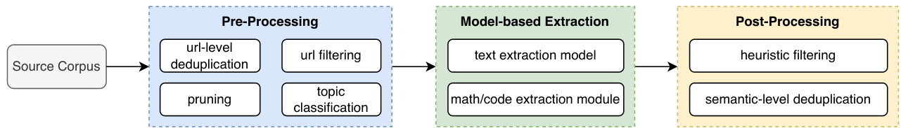
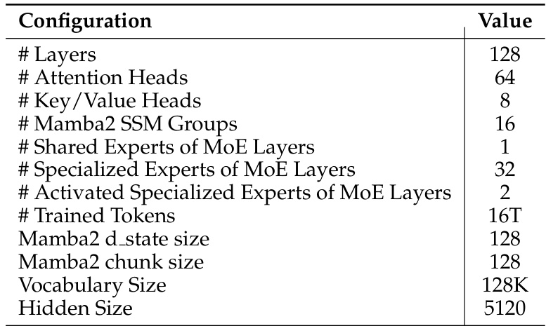
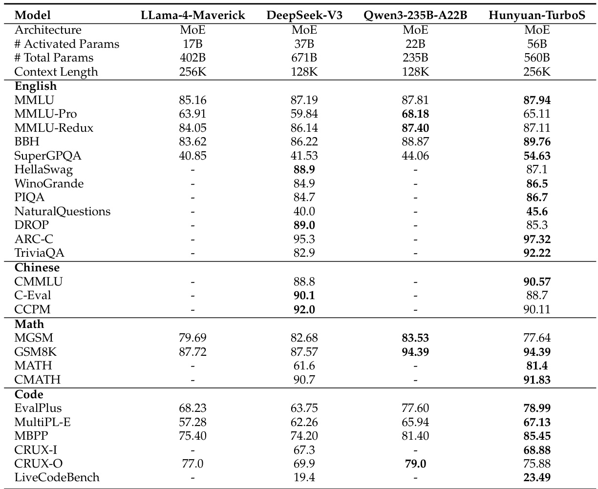
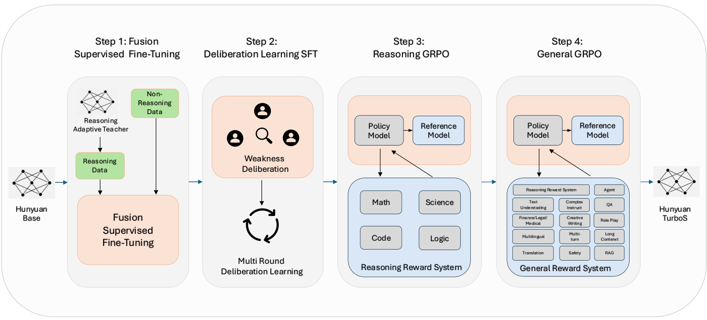

Hunyuan-TurboS: Advancing Large Language Models through Mamba-Transformer Synergy and Adaptive Chain-of-Thought
None
Abstract
このアブストラクトでは、Hunyuan-TurboSという画期的な大規模言語モデル（LLM）についてご紹介します！
このモデルは、長い文章の扱いに長けたMambaアーキテクチャと、文脈理解に優れたTransformerアーキテクチャの良いとこ取りをしたハイブリッドモデルです。さらに、賢い思考の切り替え機能（適応的思考連鎖）によって、簡単な質問にはサッと答え、難しい問題にはじっくり考えて答えることができます。その結果、非常に高性能でありながら、計算コストも抑えることに成功しています。この論文の要約では、Hunyuan-TurboSの構造、学習方法、そして驚くべき評価結果について概観します。
基本用語のチェック！
- LLM (Large Language Models): 大規模言語モデル。大量のテキストデータで学習し、人間のような自然なテキストを生成・理解するAI。
- Transformer: 注意機構(Attention)を基盤とし、文脈理解に優れたニューラルネットワークアーキテクチャ。
- Mamba: State Space Model (SSM) に基づく新しいシーケンスモデル。特に長い系列データの効率的な処理に優れるアーキテクチャ。
- MoE (Mixture of Experts): 複数の専門家ネットワーク（エキスパート）を持ち、入力に応じて最適なエキスパートを選択・組み合わせて処理を行うことで、モデルの能力と効率を向上させる構造。
大規模言語モデル（LLM）が急速に進歩する中、私たちはHunyuan-TurboSという新しい大規模ハイブリッドTransformer-Mamba Mixture of Experts（MoE）モデルを提案します。
強みの相乗効果
Hunyuan-TurboSは、2つの強力なアーキテクチャの長所を融合させています：
- Mamba: 長いシーケンス（文脈）の処理効率が非常に高い
- Transformer: 文脈の深い理解と関連付けに優れている
適応的な思考連鎖 (CoT)
Hunyuan-TurboSは、適応的ロングショートChain-of-Thought (CoT)メカニズムを備えています。
CoTとは？
Chain-of-Thought（思考の連鎖）は、複雑な問題に対して、モデルが段階的な思考プロセスを明示的に生成することで、より正確な答えを導き出すテクニックです。
- 単純な質問: 迅速に応答！
- 複雑な問題: 深く「思考」！
これにより計算資源を最適化
モデルアーキテクチャの概要
このモデルは、560億（56B）の活性化パラメータ（総パラメータ数は5600億）を持ち、128層のネットワーク（Mamba2、Attention、FFN）で構成されています。革新的なAMF/MFブロックパターンを採用しています。
Faster Mamba2
線形計算量を実現し、長いシーケンスでも高速処理。
Grouped-Query Attention (GQA)
KVキャッシュ（計算途中の情報を一時保存するメモリ領域）を最小限に抑えます。
FFN (Feed-Forward Networks)
MoE（Mixture of Experts）構造を採用し、効率的に多様な知識を処理。
AMF/MFブロックパターンとは？
Attention (A), Mamba2 (M), FFN (F) の各ブロックを特定の順序（例: A→M→F、その後 M→F）で組み合わせることで、性能と効率のバランスを取る設計です。
事前学習：知識の土台作り
Hunyuan-TurboSは、膨大なデータで学習しています：
- 16兆個の高品質なトークン（単語や文字のようなデータの単位）で事前学習。
- 最大256Kトークンの長大な文脈長をサポート。
- 業界初！ 大規模なMambaベースモデルの実用展開。
包括的な事後学習戦略
事前学習後、モデルの能力をさらに高めるために、多角的な戦略を採用しています：
300万件の指示データを用いて、モデルの基本性能を向上させます。
問題の難易度に応じて思考の深さを変え、長い思考プロセスを効率的に圧縮・再フォーマットします。
モデルが他のモデルとの比較や自己評価を通じて、反復的に能力を改善します。
まずSTEM（科学・技術・工学・数学）分野、次に一般的な指示追従能力を強化します。
評価結果：高い性能を実証！
Hunyuan-TurboSの性能は非常に優れています：
LMSYS Chatbot Arena
スコア 1356 を獲得し、全体でトップ7にランクイン！
Gemini-2.0-Flash-001 (1352点) や o4-mini-2025-04-16 (1345点) といった有力モデルを上回っています。
自動評価ベンチマーク
23種類の自動評価ベンチマークで平均 77.9% のスコアを達成！
Hunyuan-TurboSは、高い性能と効率性のバランスを実現し、多くの推論モデルよりも低い推論コストで実質的な能力を提供します。これにより、効率的な大規模事前学習モデルの新しいパラダイムを確立します。
図1: Hunyuan-TurboSのベンチマーク性能
図1の解説: この棒グラフは、Hunyuan-TurboS（濃い青色の斜線入り棒）の性能を、他の主要な大規模言語モデル（Qwen Max、GPT 4.5、Claude 3.7 Sonnet、DeepSeek-V3 0324）と比較して示しています。 比較対象のベンチマークは以下の通りです：
- AIME 2025: 数学オリンピックレベルの問題解決能力。Hunyuan-TurboSは40.0%を達成。
- Chatbot Arena: 人間によるブラインド評価。Hunyuan-TurboSは1356点を獲得し、非常に高い評価を得ています。
- MMLU-PRO: 多様な分野の知識と推論能力。Hunyuan-TurboSは78.0%と高いスコア。
- IFEval: 指示追従能力。Hunyuan-TurboSは87.6%と非常に高いスコア。
- Arena Hard: 難しいプロンプトに対する応答品質。Hunyuan-TurboSは91.9%とトップクラスの性能。
- GPQA diamond: 専門家レベルの質問応答。Hunyuan-TurboSは62.1%。
- LiveCodeBench: コーディング能力。Hunyuan-TurboSは43.0%。
ポイント: 全体的にHunyuan-TurboSは、特にChatbot Arena、IFEval、Arena Hardといった、より実践的な能力や対話能力、指示理解能力が問われるタスクで非常に高い性能を示しています。他のモデルと比較しても競争力があることがわかります。
この論文の核心
Hunyuan-TurboSは、MambaとTransformerのハイブリッド構造、適応的思考連鎖、そして包括的な学習戦略により、性能と効率の新たな標準を打ち立てることを目指しています。
1 Introduction
このセクションでは、近年の大規模言語モデル（LLM）開発の急速な進展と、本論文で提案する新しいモデル Hunyuan-TurboS の革新的な特徴、アーキテクチャ、そして主な貢献について詳しく解説します。Hunyuan-TurboSは、最先端の性能と優れた計算効率を両立させることを目指して設計された、TransformerとMambaアーキテクチャを融合させたハイブリッドなMixture of Experts (MoE)モデルです。
大規模言語モデル（LLM）の開発は、近年、前例のない速さで加速しており、基盤モデルにおける最近のブレークスルーを通じて、人工汎用知能（AGI）へと急速に近づいています。
大規模言語モデル (LLM: Large Language Models): 何十億ものパラメータを持ち、大量のテキストデータで学習することで、人間が生成するような自然なテキストを理解し生成する能力を持つAIモデルです。翻訳、要約、質疑応答など多様なタスクに対応可能です。
人工汎用知能 (AGI: Artificial General Intelligence): 人間が持つ広範な知的タスクを理解し、学習し、実行できる能力を持つ、仮説上のAIです。特定のタスクに特化した現在のAIとは異なり、未知の状況にも適応できる汎用的な知能を目指します。
基盤モデル (Foundation Models): 大量の広範なデータで訓練され、多様な下流タスクに適応（ファインチューニング）できる大規模なAIモデルです。LLMも基盤モデルの一種と言えます。
GPT-4o (OpenAI, 2024a)、Gemini 2.5 (DeepMind, 2025)、DeepSeekR1 (Guo et al., 2025)、Qwen3 (Yang et al., 2025b) といった先進的なシステムは、特化型AIと人間が長年創造しようとしてきた汎用知能との間のギャップを著しく縮める能力を示しています。
これらの境界をさらに押し上げることを目指し、私たちは Hunyuan-TurboS を導入します。これは、大規模なハイブリッドTransformer-Mamba Mixture of Experts (MoE) モデルです。
Hunyuan-TurboSの革新的な特徴
Hunyuan-TurboSは、性能と効率の優れたバランスを達成する強力なLLMとしての地位を確立する、いくつかの革新的な特徴を示します。
特徴 1: アーキテクチャの相乗効果
効率的な長系列処理能力を持つ Mamba (Gu & Dao, 2023) アーキテクチャと、優れた文脈理解能力を持つ Transformer (Vaswani et al., 2017) アーキテクチャを相乗的に組み合わせています。
Mamba: 状態空間モデル(SSM)をベースとし、長いシーケンスデータを扱う際の計算効率（線形計算量）と性能に優れるアーキテクチャ。
Transformer: Attention機構により、入力シーケンス内の単語間の関連性を捉えることで高い文脈理解能力を発揮するアーキテクチャ。
特徴 2: 適応的長短Chain-of-Thought (CoT)
適応的長短Chain-of-Thought (CoT)メカニズム を採用しています。これにより、短CoTモデル（例：GPT-4o）の迅速な応答性と計算効率、長CoTモデル（例：o3）の複雑な推論能力を統合します。
Chain-of-Thought (CoT): モデルが最終的な回答に至るまでの中間的な推論ステップを生成する手法。複雑な問題解決能力を向上させます。
単純な質問: 「思考なし」モードで最小限の計算コストで応答。
複雑な問題: 「思考」モードで段階的分析、自己反省、バックトラッキングなど深い推論を実行。
Hunyuan-TurboSは、Transformer、Mamba2 (Dao & Gu, 2024)、およびFeed-Forward Network (FFN)コンポーネントを統合したハイブリッドアーキテクチャであり、訓練と推論の両方でスケーラビリティと効率性を追求して設計されています。
Mamba2: Mambaアーキテクチャの改良版。
Feed-Forward Network (FFN): Transformerブロック内で各トークン表現を非線形変換する役割を持つニューラルネットワーク層。
- Mamba2: 57層
- Attention: 7層
- FFN: 64層
- 活性化: 56B (560億)
- 総数: 560B (5600億)
アーキテクチャは、長文脈タスクにおける性能と効率のバランスを取るために、"AMF" (Attention - Mamba2 - FFN) と "MF" (Mamba2 - FFN) のブロックパターンを採用しています。
ブロックパターン模式図:
AMFブロック
[Attention] [Mamba2] [FFN]MFブロック
[Mamba2] [FFN]- Mamba2層: 線形計算量 (\(O(n)\)) を達成。
- Attention層: Grouped-Query Attention (GQA) (Ainslie et al., 2023) を採用し、KVキャッシュのオーバーヘッドを最小化。
- FFN層: Mixture of Experts (MoE) 構造を使用。32のエキスパートを持ち、トークンごとに1つの共有エキスパートと2つの特化エキスパートを活性化。
Grouped-Query Attention (GQA): Multi-Head Attentionの変種で、複数のクエリヘッドがキー(K)とバリュー(V)のヘッドの単一のセットを共有することで、KVキャッシュのサイズを削減し、推論効率を向上させる手法です。
KV Cache: Transformerモデルが次のトークンを予測する際に、以前に計算したキー(K)とバリュー(V)の値を保存しておくメモリ領域。これにより計算の重複を避け、推論を高速化します。
Mixture of Experts (MoE): モデル内に複数の「エキスパート」と呼ばれる小さなニューラルネットワークを持ち、入力に応じて特定のエキスパートが処理を担当するアーキテクチャ。モデル全体のパラメータ数を増やしながら、計算コストを抑えることができます。
Hunyuan-TurboSは、16兆トークンの高品質データセットで事前学習されており、最大 256Kトークンのコンテキスト長をサポートします。
Hunyuan-TurboSは、業界で初めて実運用された大規模Mambaベースモデルであり、効率的な大規模事前学習モデルの新しいパラダイムを確立しています。
事後学習戦略 (Post-Training Strategy)
Hunyuan-TurboSの事後学習戦略は、その能力を大幅に向上させるために設計された4つの重要なモジュールで構成されています。
300万の自然データおよび合成データ（Wang et al., 2022; Luo et al., 2023b; Zeng et al., 2024; Luo et al., 2023a; Wei et al., 2023b）からなる指示データを体系的にキュレーションし、堅牢な基盤を確立します。データは多様なドメインにわたる包括的に描写されたトピックによって分類され、厳格なフィルタリングと品質保証のために多次元メトリクスが実装されます。
モデルが最適な推論戦略を自律的に選択し、計算リソースを効率的に割り当て、長い思考連鎖の可読性を向上させるための新しい手法です。これは、専用のSFTと、難易度適応型およびCoT圧縮報酬を用いた独自の強化学習フレームワークを通じて洗練された教師モデルによって実現されます。
SFTモデルが、シミュレートされた評価環境で他の最先端Hunyuanモデルと比較されます。この反復的な改良サイクルは、多LLM審査員アンサンブルと人間の専門家の監督による評価によって駆動され、能力ギャップを戦略的に特定・対処し、後続のSFTイテレーションに情報を提供します。
GRPO (Generative Reward Preference Optimization) を活用した2段階の大規模強化学習プロセスでモデルをさらに洗練させます。第1段階では推論能力の強化に焦点を当て、第2段階では全ドメインにおける一般的な指示追従能力の向上を目指します。
この相乗的で多面的な戦略は、非常に有能で効率的、かつ適応性のある言語モデルを育成することを目的としています。
評価結果の概要
人間による評価と自動評価の両方で、Hunyuan-TurboSの競争力のある能力が実証されています。
LMSys Chatbot Arena
バイアスを最小限に抑え、客観的な能力評価を提供するブラインド、サイドバイサイドの人間評価で知られるLMSys Chatbot Arenaで、Hunyuan-TurboSは1356点という注目すべきスコアを達成しました。これにより、Gemini-2.0-Flash-001、o4-mini、Gemma-3-27B-itのような強力な競合他社を上回り、トップ7モデルの1つに位置づけられています。特に、数学、マルチターン、長文クエリなどのカテゴリでは、私たちのモデルはトップ5にランクインしています。
自動評価
数学的推論、論理的推論、コード生成、知識、アラインメントタスク、指示追従を含む23のベンチマークでHunyuan-TurboSを評価しました。モデルは平均スコア\(77.9\%\)を達成し、同等の非推論モデルを大幅に上回りました。その性能は計算集約的な推論モデルに匹敵する一方で、Hunyuan-TurboSは特にその大幅に低い推論コストを考慮すると、効率と有効性の顕著なバランスを示しています。
この研究の主な貢献は以下の通りです。
Pre-Training:
1 データレシピ (Data Recipe)
16兆トークンの高品質データのための綿密なデータキュレーションパイプラインを開発しました。体系的なフィルタリング、重複排除、専門コンテンツ抽出モジュールを通じて、量、質、多様性を向上させました。
フィルタリング → 重複排除 → コンテンツ抽出
2 560B Mambaモデル
革新的なAMF/MFブロックパターンを特徴とする、総パラメータ数5600億の新しいハイブリッドTransformer-Mamba2-MoEアーキテクチャを設計しました。これにより、Mamba2の効率性とTransformerの文脈理解能力を相乗効果で高めます。
3 アニーリング (Annealing)
多様なデータを用いたアニーリングフェーズや、NTK-aware positional encoding を使用した最大256Kトークンまでのカリキュラムベースの長文脈拡張を含む、多段階の事前学習改良を実装しました。
アニーリング (Annealing): 機械学習において、学習率を徐々に下げるなどの手法で、モデルをより良い局所最適解に収束させるプロセス。
NTK-aware positional encoding: Neural Tangent Kernel (NTK) の理論に基づいた位置エンコーディング手法。長いコンテキストに対応するために位置情報をスケーリングする際に、モデルの性能劣化を抑える効果があります。
Post-Training:
1 データレシピ (Data Recipe)
堅牢なSupervised Fine-Tuning (SFT) のために300万の指示データセットをキュレーションしました。多様なトピックで分類され、厳格な品質保証が行われており、モデルの強力な基礎能力を確立します。
2 適応的CoTフュージョン (Adaptive CoT Fusion)
特別に訓練された教師モデルと強化学習を介して、推論戦略の動的な選択を可能にする適応的長短Chain-of-Thoughtフュージョン手法を開発しました。特筆すべきは、私たちのモデルがLMSYS Chatbot Arenaでトップクラスの推論モデルに匹敵する性能を発揮しつつ、生成トークンを約50%しか使用しないことです。これはトークン効率の大幅な改善を示し、直接的に生成コストの削減につながります。
トークン効率向上 生成コスト削減
3 熟議学習 (Deliberation Learning)
Multi-round Deliberation Learning を実装しました。SFTモデルが他のモデルと競争することで能力を反復的に改良し、LLM審査員アンサンブルと人間の専門家の監督によって導かれます。
4 2段階GRPO (Two-stage GRPO)
2段階の大規模強化学習（GRPO）プロセスを採用しました。最初はSTEM分野の推論を対象とし、次に包括的な一般報酬システムに導かれて一般的な指示追従能力を対象としました。
段階1
STEM推論
段階2
一般指示追従
Infrastructures:
1 Angel-RL
Angel-RL を構築しました。これは、訓練と推論を統合した効率的な強化学習フレームワークであり、包括的な並列処理（TP, PP, EP, CP）とコンテキスト並列処理のための革新的な状態伝達を組み込んでいます。
TP (Tensor Parallelism): 個々のモデルパラメータ（テンソル）を複数のデバイスに分割して並列計算する手法。
PP (Pipeline Parallelism): モデルの層を複数のデバイスに分割し、パイプラインのようにデータを処理する手法。
EP (Expert Parallelism): MoEモデルにおいて、エキスパートを異なるデバイスに配置して並列処理する手法。
CP (Context Parallelism): 長いシーケンスを複数のチャンクに分割し、各チャンクを異なるデバイスで並列に処理する手法。
2 Mamba MoE
AngelHCF を介して推論を最適化しました。これには、Mambaカーネルの強化（プリフィル/デコード）、MoEエキスパート並列処理、および長文テキスト生成品質を向上させるためのMamba状態のfp32精度が含まれます。最終的に、純粋なTransformer MoEモデルであるHunyuan-Turboと比較して1.8倍の速度向上を達成しました。
Hunyuan-Turbo比 1.8x 高速化
Summary of Core Evaluation Results:
1 LMSYS Chatbot Arena
Hunyuan-TurboSはArenaスコア1356点を達成し、全体でトップ7にランクインしました。中国語、フランス語、スペイン語でトップ1を獲得し、困難なプロンプト、創造的なライティング、マルチターン、長文クエリなどのタスクでトップ5に入りました。
2 自動評価 (Automatic Evaluations)
モデルは23の自動ベンチマークで強力なパフォーマンスを示し、平均\(77.9\%\)を達成しました。数学、コーディング、一般ドメインで顕著な結果を残しました。
3 効率と性能のバランス
私たちのモデルは、高いパフォーマンスと計算効率を効果的に両立させています。多様な評価において、より大きな推論モデルに匹敵する実質的な能力を、大幅に低い推論コストで提供します。
高性能 低コスト
2 Pre-Training
このセクションでは、Hunyuan-TurboSモデルの事前学習 (Pre-Training) 段階における詳細を解説します。事前学習は、大規模言語モデル（LLM）が広範な知識と基本的な能力を獲得するための非常に重要なプロセスです。具体的には、以下の3つの主要な要素について掘り下げていきます。
(a) 事前学習用データ
LLMの能力獲得の基盤となる情報を提供する、データ品質管理とデータ混合のための体系的なパイプラインについて説明します。
(b) モデル構造
効率的かつ効果的なLLMの学習とサービス提供を可能にする、新しいハイブリッドTransformer-Mamba構造の設計思想と詳細について提案します。
(c) アニーリングと長文脈事前学習レシピ
事前学習におけるこれら2つの重要な段階での洞察と具体的な手法について解説します。
これらの技術は、Hunyuan-TurboSが下流タスク（具体的な応用タスク）で顕著な能力を発揮するための基礎を構築します。
2.1 Data for Pre-training
事前学習データは、LLMにとってまさに「燃料」のようなものです。Hunyuan-TurboSでは、以前のモデルであるHunyuan-Large (Sun et al., 2024) と比較して、事前学習段階で使用するデータを以下の3つの主要な側面で強化しました。
量 (Quantity)
より多くのデータを使用
質 (Quality)
より高品質なデータを選定
多様性 (Diversity)
より多様な種類のデータを含める
下の図2に示すように、多様な生のデータソースを効率的に処理するために、データキュレーションパイプラインを厳密に洗練させました。
図2: Hunyuan-TurboSにおける事前学習データのキュレーションパイプライン
Step 1多様な形式のソースデータ処理
- URLレベルの重複排除 (URL-level deduplication): 同じウェブページやリソースからの重複データを排除します。
- フィルタリング (Filtering): 様々な形式のソースデータから不要なアイテムを除去します。
- ブロックレベルのプルーニング (Block-level pruning): 各データインスタンス内のノイズの多いコンテンツ（広告、定型文など）を正確に除去し、低品質データの量を減らし、後続プロセスの高速化を図ります。
- トピック分類 (Topic classification): 各生のコンテンツにトピック分類モデルで特定のトピックラベルを付与し、後続の処理段階を容易にします。
Step 2コンテンツ抽出と品質向上
- コンテンツ抽出 (Content extraction): クリーニングされたデータからプレーンテキストを抽出します。
- ドメイン固有抽出モジュール (Domain-specific extraction modules): 高品質なSTEM（科学・技術・工学・数学）データやコードデータを取得するために、いくつかの専用モジュールを構築しました。
- ヒューリスティックフィルタリング (Heuristic filtering): 包括的な経験則に基づくフィルタリング手法を用いて、低品質な抽出コンテンツを破棄します。
- グローバルスケール意味レベル重複排除 (Global-scale semantic-level deduplication): 大規模データ全体で意味的に類似・重複する内容を排除し、最終的なデータを生成します。
包括的な批判モデル (Critique models)とデータ混合モデル (Data mixture models)を開発することで、品質と多様性の保証システムを最適化しました。
- 批判モデル: 数十の整理されたドメインタイプラベルと共に、いくつかの基本的な品質基準を導入し、原理に基づいたデータ選択と統合を可能にします。
- データ混合モデル: 事前学習の異なるフェーズで効果的な混合モデルを使用し、最適なデータ利用を保証する多様なデータ混合レシピを提供します。
最終的に、Hunyuan-TurboSは、我々のトークナイザーで16兆トークンからなるコーパスで学習されました。このトークナイザーはHunyuan-Largeで使用されたものと同じで、128Kトークンの語彙数を持っています。
トークナイザー (Tokenizer)とは、テキストをより小さな単位（トークン）に分割するプログラムです。例えば、「こんにちは世界」というテキストを「こんにちは」と「世界」というトークンに分割します。LLMはこれらのトークンを処理単位として学習します。
語彙数 (Vocabulary size)とは、トークナイザーが認識できるユニークなトークンの総数です。128Kは128,000を意味し、モデルが128,000種類の異なるトークンを扱えることを示します。
2.2 Model Architecture
Hunyuan-TurboSは、Transformer (Vaswani et al., 2017)、Mamba2 (Dao & Gu, 2024)、そしてFeed-Forward Network (FFN) の要素を組み合わせたハイブリッドアーキテクチャです。このモデルは、スケーリング則に従い、学習と推論の両方の効率を最適化するように設計されており、活性化パラメータ数56B (560億)、総パラメータ数560B (5600億)にスケールアップされました。
- Transformer: 自己注意機構（Self-Attention）を用いて文脈理解に優れた性能を発揮するアーキテクチャ。多くのLLMの基礎となっています。
- Mamba2: 状態空間モデル(SSM)の一種で、特に長いシーケンスの処理効率に優れています。Transformerの計算量問題を解決する可能性を秘めています。
- Feed-Forward Network (FFN): ニューラルネットワークの基本的な構成要素で、各層で非線形変換を行います。
- 活性化パラメータ (Activated parameters): モデルが一回のフォワードパス（計算）で実際に使用するパラメータの数。MoE（Mixture of Experts）構造などで総パラメータ数より少なくなることがあります。
- 総パラメータ (Total parameters): モデルが持つ全てのパラメータの総数。
アーキテクチャは128層で構成されています（Attentionブロック、FFNブロック、Mamba2ブロックはそれぞれ1層としてカウントされます）。
FFN層：Mixture of Experts (MoE)
各FFN層は、Hunyuan-Large (Sun et al., 2024) と同様の戦略に従ったMoE (Mixture of Experts)構造を採用しています。これは、1つの共有エキスパート (Shared expert)と32個の特化エキスパート (Specialized experts)から構成され、フォワードパスごとに1つの共有エキスパートと2つの特化エキスパートが活性化されます。
MoEとは？
複数の「エキスパート」と呼ばれる小さなニューラルネットワークを持ち、入力に応じて最適なエキスパートを選択して処理を行う仕組みです。これにより、モデル全体のパラメータ数を増やしつつ、計算コストを抑えることができます。
Mamba2層：状態空間モデル (SSM)
Mamba2層は、状態空間モデル (State-Space Model, SSM) アーキテクチャを採用しており、シーケンス長に対して線形複雑度 (O(n)) を達成します。これにより、非常に長いシーケンスを効率的に処理できます。
線形複雑度 O(n) とは？
計算量が入力シーケンスの長さ (n) に比例して増加することを意味します。TransformerのAttentionは通常O(n2)であり、シーケンスが長くなると計算量が急増しますが、Mamba2はこれを線形に抑えます。
研究チームは、活性化パラメータと総パラメータの予算を固定した上で、モデルの性能を最適化しつつ効率を維持するために、Attention (A)、Mamba2 (M)、FFN (F) 層の様々な組み合わせを広範囲に検討しました。その結果、以下の比率が採用されました：
- FFN層: 全体の 50%
- Attention層: 全体の 5.5%
- Mamba2層: 全体の 44.5%
Attention層の割合は、モデル性能、検証損失、KVキャッシュのオーバーヘッド、推論効率に大きく影響します。
Attention層では、Grouped-Query Attention (GQA) を利用してKVキャッシュのメモリ使用量を最小限に抑えています。さらに、学習の安定性を高めるためにAttentionブロックにQK正規化 (QK normalization) を実装しました。
Grouped-Query Attention (GQA): クエリヘッドのグループが単一のキー(K)ヘッドとバリュー(V)ヘッドを共有するAttentionの変種です。これにより、標準的なMulti-Head Attentionと比較して、推論時のKVキャッシュのサイズを大幅に削減できます。
KVキャッシュ (Key-Value Cache): Transformerモデルがテキストを生成する際に、過去のトークンのキーとバリューの計算結果を保存しておくメモリ領域のこと。これにより計算を効率化しますが、長いシーケンスではメモリを圧迫します。
QK正規化 (QK Normalization): Query (Q) と Key (K) の内積計算前に、これらのベクトルを正規化する手法。学習中の勾配爆発や消失を防ぎ、学習を安定させる効果があります。
具体的なアーキテクチャとして、"AMF"ブロック (Attention + Mamba2 + FFN) が効率と性能のバランスを取る最適な基本構成として浮上しました。さらに効率を高めるために、"MF"ブロック (Mamba2 + FFN) も構造に採用しています。Hunyuan-TurboSは、これらの「AMF」ブロックと「MF」ブロックを交互に配置したインターリーブドアーキテクチャ (Interleaved architecture) を採用しています。
AMFブロック
Attention Mamba2 FFN
MFブロック
Mamba2 FFN
AMFブロックとMFブロックを交互に配置
モデルハイパーパラメータ
- 隠れ層次元 (Hidden dimension): 5,120
- 各エキスパートの中間層次元 (Intermediate dimension): 17,024
- Attention層:
- Attentionヘッド数: 64
- KVヘッド数: 8 (GQAのため、Attentionヘッド数より少ない)
- Mamba2ブロック:
- 並列ヘッド数: 64
- SSMグループサイズ: 16
- チャンクサイズ: 128
学習ハイパーパラメータ
Hunyuan-TurboSの主要な学習ハイパーパラメータは表1にまとめられています。
表1: Hunyuan-TurboSの主要なハイパーパラメータの概要
| ハイパーパラメータ | 値 | 説明 |
|---|---|---|
| シーケンス長 (Sequence Length) | 4,096 トークン | モデルが一度に処理できるトークンの最大長。 |
| 総学習トークン数 (Total Tokens) | 16兆 (16T) | 事前学習全体で使用されたトークンの総数。 |
| オプティマイザ (Optimizer) | AdamW | 学習に使用される最適化アルゴリズム。 |
| AdamW β1 | 0.9 | AdamWのハイパーパラメータ（一次モーメントの指数減衰率）。 |
| AdamW β2 | 0.95 | AdamWのハイパーパラメータ（二次モーメントの指数減衰率）。 |
| 重み減衰 (Weight Decay, λ) | 0.1 | 過学習を防ぐための正則化手法。 |
| MoEキャパシティファクター (Capacity Factor, γ) | 1.5 | Mixture of Experts学習において、各エキスパートが処理できるトークン数のバッファ。1.5は、平均的に各エキスパートに割り当てられるトークン数の1.5倍まで処理できることを意味し、十分なエキスパートカバレッジを確保します。 |
ベースモデルは、シーケンス長4,096トークンで合計16兆トークン学習されました。最適化にはAdamW ($\beta_1 = 0.9, \beta_2 = 0.95$) を使用し、重み減衰は $\lambda = 0.1$ です。Mixture of Expertsの学習では、十分なエキスパートカバレッジを確保するためにキャパシティファクター $\gamma = 1.5$ に設定しました。
AdamWのパラメータ:
\( \beta_1 = 0.9 \)
\( \beta_2 = 0.95 \)
\( \lambda = 0.1 \)
MoEのキャパシティファクター:
\( \gamma = 1.5 \)
2.3 Annealing
事前学習段階の完了後、アニーリング (Annealing) 段階を導入しました。これは、学習率を急速に減衰させ、ベースモデルの能力を洗練させることを目的としています。
- 開始点: 事前学習の最終学習率から開始。
- 学習率スケジュール: 高速なコサイン減衰 (Cosine decay) スケジュールを適用し、最小学習率 5e-6 まで減衰させます。
コサイン減衰とは？
学習率をコサイン関数の形状に沿って徐々に減少させていく手法です。学習の初期には比較的高い学習率を保ち、学習が進むにつれて学習率を滑らかに小さくしていきます。これにより、学習の安定化とより良い収束が期待できます。
学習率 \( \eta_t = \eta_{min} + \frac{1}{2}(\eta_{max} - \eta_{min})(1 + \cos(\frac{t}{T}\pi)) \)
ここで、\( \eta_t \) はステップ \( t \) での学習率、\( \eta_{min} \) は最小学習率、\( \eta_{max} \) は最大学習率（アニーリング開始時の学習率）、\( T \) は総ステップ数です。
- シーケンス長: 4,096 トークン。
- バッチサイズ: 約900万トークンに相当。
- アニーリング用トークン数: 300B (3000億) トークンを割り当て。
この設定により、計算上の実行可能性を維持しつつ、効率的な大規模文脈学習が促進されます。
包括的な性能と頑健性を確保するため、アニーリング段階では以下のような異種混合データ (Heterogeneous mixture of data)で学習を行います。
モデルの欠陥に対処し、汎化能力を高めるために、データ分布を最適化するための広範なデータアブレーション (Data ablation) および構成研究 (Composition studies) を実施しました。
データアブレーション研究 (Data Ablation Study): データセットの特定の部分を除外したり変更したりして、それがモデルの性能にどのような影響を与えるかを調べる研究手法です。どのデータが重要であるかを理解するのに役立ちます。
構成研究 (Composition Study): 異なる種類のデータをどのような比率で混合するのが最適かを調べる研究です。
この段階で得られたいくつかの重要な洞察は以下の通りです。
1 高品質な事前学習データの維持: 極めて重要です。広範な実証研究を通じて、このサブセットの構成と割合を慎重にキュレーションし、そのような最適化が下流タスクの性能と汎化能力の両方に大幅な改善をもたらすことを見出しました。
2 指示追従データのアニーリング段階への導入: 指示追従データのかなりの部分をアニーリング段階に進めます。この戦略により、SFT（Supervised Fine-Tuning）段階で必要な指示チューニングの量が削減され、後続のRL（Reinforcement Learning）段階での改善能力が向上します。
3 ウェブクロールコンテンツの適度な維持とQAスタイルデータへの選択的損失適用: ウェブから収集したコンテンツを適度な割合で保持し、QA（質問応答）形式のデータに選択的にターゲット損失を適用します。この組み合わせは、ベースモデルが自由形式のテキストを続けるべき場面で、テストのような質問を生成する方向に逸脱するのを防ぐのに役立ちます。
4 シーケンストランケーションの慎重な処理 (特に長文CoTデータ): 重要な解答内容が破棄されるのを避けるため、コンテキストウィンドウを超えるシーケンスは長文脈学習フェーズに先送りされます。
2.4 Long-Context Extension
事前学習の最終フェーズでは、カリキュラムベース戦略 (Curriculum-based strategy) を採用して、モデルのコンテキストウィンドウを段階的に拡張します。
簡単なタスクから始めて徐々に難しいタスクへと移行するように学習データを編成する手法です。人間の学習方法に似ており、モデルが効率的に学習を進めるのに役立ちます。
コンテキストウィンドウは、Hunyuan-Largeと同様に、以下のように段階的に拡張されます。
この段階的な拡張は、NTK-aware (Peng & Quesnelle, 2023) 位置エンコーディングによって促進されます。これには、スケーリングパラメータとして以下が組み込まれています。
- 32Kステージ: \( \alpha = 50 \)
- 256Kステージ: \( \alpha = 1000 \)
NTK-aware (Neural Tangent Kernel aware) 位置エンコーディングは、Transformerモデルが訓練時よりも長いシーケンスを処理できるようにするための技術です。特にRoPE (Rotary Positional Embedding) のような位置エンコーディングに対して、スケーリングパラメータ \( \alpha \) を調整することで、コンテキスト長を拡張する際に性能低下を抑えることができます。
このステージを通じて、学習率は一定の 5e-6、バッチサイズは約900万トークンを維持し、これはアニーリングステージと一致しています。
能力維持とコンテキスト拡張のバランスを取るために、トークン量をわずかに増やした慎重な学習戦略を採用しています。具体的には、
- 32Kステージ: 30B (300億) トークン
- 256Kステージ: 20B (200億) トークン
この際、短文脈データと長文脈データの比率は3:1 となっています。
また、多様なドメインとジャンルにわたる長文ドキュメントのコレクションを慎重にキュレーションしました。これらは自然な分布では比較的希少ですが、下流タスクの性能向上に重要な役割を果たします。
2.5 Evaluations on Pre-Trained Model
このセクションでは、Hunyuan-TurboS事前学習済みモデルの性能を、広範囲にわたる一般的に使用されるベンチマークで評価し、多様なタスクにおけるその強力な基本能力を示します。
2.5.1 Benchmarks and Experimental Settings
主要ベンチマーク: Hunyuan-TurboSを、常識推論、読解、質問応答、数学的問題解決、コーディング、および集約タスクを含む複数のタスクにわたる、英語と中国語の包括的な一般的に使用されるベンチマークセットで評価しました。以下のベンチマークで広範な評価を実施します。
集約知識 (Aggregated knowledge)
- MMLU (Hendrycks et al., 2021)
- MMLU-Pro (Wang et al., 2024b)
- MMLU-Redux (Gema et al., 2024)
- BBH (Suzgun et al., 2022)
- CMMLU (Li et al., 2023a)
- C-Eval (Huang et al., 2024)
- CCPM (Li et al., 2021)
- SuperGPQA (Du et al., 2025)
常識推論 (Commonsense reasoning)
- HellaSwag (Zellers et al., 2019)
- WinoGrande (Sakaguchi et al., 2021)
- PIQA (Bisk et al., 2020)
質問応答 & 読解
- DROP (Dua et al., 2019)
- NaturalQuestions (Kwiatkowski et al., 2019)
- ARC-C (Clark et al., 2018)
- TriviaQA (Joshi et al., 2017)
数学的推論 (Mathematical reasoning)
- GSM8k (Cobbe et al., 2021)
- MATH (Hendrycks et al., 2021)
- CMATH (Wei et al., 2023a)
- MGSM (Shi et al., 2022)
コーディング (Coding)
- EvalPlus (Chen et al., 2021)
- MultiPL-E (Cassano et al., 2022)
- MBPP (Austin et al., 2021)
- CRUXEval (Gu et al., 2024)
- LiveCodeBench (Jain et al., 2024)
評価設定とベースライン: ベンチマーク全体で標準的な評価プロトコル（確立されたメトリクスとショット構成を含む）に従います。具体的には、以下のショット構成を採用しています。
Few-shot学習の文脈で使われる用語で、モデルにタスクの例をいくつか（数ショット）提示してから、実際の質問に答えさせる評価方法です。「Zero-shot」は例を全く提示しない方法、「N-shot」はN個の例を提示する方法を指します。
Hunyuan-TurboSを、同程度のパラメータ規模を持つ最先端の事前学習済みベースモデルと比較します。比較対象は以下の通りです。
- Llama-4-Maverick (Meta, 2025)
- DeepSeek-V3 (Liu et al., 2024)
- Qwen3-235B-A22B (Yang et al., 2025a)
Mamba2とAttentionのハイブリッド設計というアーキテクチャ上の利点により、我々のモデルは下流のデプロイコストを大幅に低減しています。公平性のために、公開されている結果の中で最高のパフォーマンスを報告します。
2.5.2 Model Performance of Pre-Training
表2に示すように、結果はHunyuan-TurboSが他の最先端モデルと比較して堅牢な能力を持つことを示しています。この比較で最大のモデル（活性化パラメータ56B、総パラメータ560B）として、Hunyuan-TurboSは、最適化されたハイブリッドMamba2、Attention、およびMoEアーキテクチャを通じて効率的な推論能力を維持しながら、複数のドメインでトップクラスのパフォーマンスを提供します。
表2: 事前学習済みHunyuan-TurboSおよび他のオープンソースベースモデルの性能
英語タスク:
- SuperGPQAで 54.63 を達成 (全競合他社を10%以上上回る)。
- BBHで 89.76 を達成。
- MMLU-ReduxではQwen3-235B-A22Bにわずかに及ばないものの (87.11 vs 87.40)、TriviaQAで 92.22 と特に強力な推論能力を示す。
- WinoGrande (86.5) や PIQA (86.7) など、様々なドメインでバランスの取れた強みを示し、ほぼ最先端の性能を達成。
中国語能力:
- CMMLUで 90.57 という新たな高みに到達。
- C-Eval (88.7) でも競争力のある性能を維持。
数学的推論:
- MATHで 81.4 を達成し、最も劇的な改善を示す。
- GSM8KではQwen3-235B-A22Bと同等 (両者とも94.39)。
コーディングタスク:
- 他のモデルと比較して全体的に最高のスコアを達成し、際立ったドメインとなる。
図3は、Hunyuan-TurboSのポストトレーニングの4つのステップを示しています（このセクションの範囲外ですが、参考として記載）。
図3: Hunyuan-TurboSのポストトレーニングの4つのステップを示す図
3 Post-training
このセクションでは、Hunyuan-TurboSモデルの事前学習後に行われるポストトレーニングのプロセスについて詳しく解説します。ポストトレーニングは、モデルの基本性能をさらに向上させ、特定のタスクへの適応能力や対話能力を洗練させるための重要なステップです。
論文で示されている図3は、このポストトレーニング戦略の全体像を視覚的に表しています。Hunyuan-TurboSのポストトレーニングは、以下の4つの主要なモジュールで構成されています。
図3の解説
この図は、Hunyuan-TurboSのポストトレーニングが4つの連続したステップで構成されていることを示しています。
- ステップ1: Fusion Supervised Fine-Tuning (融合監視ファインチューニング)
- Hunyuan Base (事前学習済みモデル) から開始します。
- Reasoning Adaptive Teacher (推論適応型教師モデル) が推論データ (Reasoning Data) を生成します。
- 非推論データ (Non-Reasoning Data) と生成された推論データを融合し、モデルのファインチューニングを行います。
- ステップ2: Deliberation Learning SFT (熟議学習SFT)
- Weakness Deliberation (弱点熟議): 人間の専門家とLLM審査員がモデルの弱点を特定します。
- Multi Round Deliberation Learning (多ラウンド熟議学習): 特定された弱点に基づいてSFTを繰り返し行い、モデルを段階的に改善します。
- ステップ3: Reasoning GRPO (推論GRPO)
- Policy Model (方策モデル) と Reference Model (参照モデル) を使用します。
- Reasoning Reward System (推論報酬システム) (数学、科学、コーディング、論理などの分野) に基づいて、Generative Reward Preference Optimization (GRPO) という強化学習手法でモデルを最適化します。
- ステップ4: General GRPO (一般GRPO)
- 同様にPolicy ModelとReference Modelを使用します。
- General Reward System (一般報酬システム) (テキスト理解、翻訳、金融、法律、医療、多言語、安全性など、より広範な分野) に基づいてGRPO強化学習を行い、モデルの汎用性を高めます。
これらのステップを経て、最終的に高性能な Hunyuan-TurboS モデルが完成します。
1. Supervised Fine-Tuning (SFT)
多様なドメインの指示データをトピック別に分類し、高品質なデータセットを構築。モデルの基礎能力を確立します。
2. Adaptive Long-short Chain-of-Thought Fusion
タスクの要求に応じてモデルが最適な推論戦略を自律的に選択し、計算資源を効率的に割り当てる新手法。思考連鎖の圧縮による可読性向上も目指します。
3. Multi-round Deliberation Learning
SFTモデルを他のHunyuanモデルと競わせ、LLM審査員と人間の専門家が弱点を特定。継続的な改善サイクルを回します。
4. Two-stage Large-scale Reinforcement Learning
まずSTEM分野に特化したGRPO訓練で推論能力を強化し、次に一般ドメインのGRPOで全般的な指示追従能力を向上させます。
3.1 Supervised Fine-tuning
このセクションでは、Hunyuan-TurboSのポストトレーニングの最初のステップであるSupervised Fine-tuning (SFT) について詳述します。SFTデータの品質と多様性は、大規模言語モデル (LLM) が様々なタスクで高い性能を発揮するために極めて重要です。
私たちは、SFTデータを詳細なトピックに分類し、各トピックに対して高品質なサンプルを厳選・収集し、それらを統合して一つのデータセットを構築しました。各トピックのデータ構築方法は以下の通りです。
(1) 数学 (Math)
初等教育から学術コンペレベルまで、多様な教育ソースから数学問題を収集。生成的報酬モデルと検証器がCoT (Chain-of-Thought) の品質を評価・反復改善します。
(2) コーディング (Coding)
ソースコードから高品質な指示データを作成するパイプラインを構築。GitHub等のオープンソースリポジトリのコード片を指示ペアに変換し、タスクタイプ、言語、知識で分類・最適化。批評モデルとサンドボックス実行による多段階フィルタリングで品質を保証します。
(3) 論理 (Logic)
公開/ライセンスソースからデータを抽出し、自動合成パイプライン (ZebraLogicに類似) でデータ量を拡大。質問タイプと難易度で分類。標準ケースはモデル、複雑なケースは専門家による階層的検証で品質を保証し、精度と効率のバランスを取ります。
(4) 科学 (Science)
物理、化学、生物学など、中学から大学院レベルまでの多様なデータを収集。LLMが難易度/品質をマークし、オリンピックや大学レベルの難問をポストトレーニング用に選択。CoT付きLLMベース検証器が、単位変換、近似、同等表現 (化学名、方程式など) を含む複雑なチェックを行い、生成された回答が参照と一致するか検証します。
(5) 言語中心タスク (Language-Centric Tasks)
言語理解、翻訳、生成に焦点。厳格なフィルタリングとリライティングでデータ品質を保証。モデル検証で無意味/曖昧な指示を除去。生成的報酬モデルがペア回答の共同評価で応答をスコアリングし、報酬ハッキングを軽減。専門家によるリライティングと反復的改善で出力をさらに最適化します。
(6) クリエイティブライティング (Creative Writing)
ジャンル、スタイルなどの多次元ラベルで指示セットの豊富さと多様性を確保。識別型RM (Reward Model) が低スコア/高分散のサンプルをフィルタリングし、価値ある指示を保持。専門家によるリライティングとモデル自己改善で高品質な応答を構築します。
(7) 英語および多言語 (English and Multilingual)
文書拡張、指示進化 (instruction evolution)、逆翻訳 (back-translation) を通じて多様な指示データを作成。訓練された人間の専門家チームが高品質な応答を注釈付けします。
(8) 複雑な指示 (Complex Instruction)
制約の数/タイプを変化させて難易度を調整し、ルールベースのフィルターで満足度をチェック。長文コンテキストでは、複数のコンテキストセグメントの統合が必要な質問を作成。エージェント用途では、ツール使用、決定タイプ、マルチターンダイナミクスを組み合わせて多様なシナリオを作成します。
(9) ロールプレイ (Role Play)
典型的な性格特性から多様なキャラクタープロファイルを作成。プロンプトエンジニアリングで会話データを生成し、指示理解、特性表現、感情的共感について応答を評価します。
(10) 知識QA (Knowledge QA)
幻覚 (ハルシネーション) を減らすため、知識集約型タスクの性能を最適化。一般知識については、交差検証と批評モデルでエラーをフィルタリングし、最良の回答を選択します。
(11) マルチターン (Multi-turn)
マルチターン対話を6カテゴリに分類。各カテゴリで、オープンソース収集、調達、合成、指示進化、疑似マルチターン合成を通じて多様なデータを構築します。
(12) 金融/法律/医療 (Finance/Legal/Medical)
法律、金融、医療分野の専門家が高品質な訓練セットのためにデータにラベル付けします。
(13) 安全性 (Safety)
約1,000の安全カテゴリで多様性とカバレッジを測定し、脆弱性に対処。分類モデルが継続的に危険なデータを識別。レッドチームが敵対的テストを実施し、セキュリティ欠陥を発見します。
これらのトピックに基づいて、私たちは300万サンプル（推論データと非推論データを含む）のSFTデータセットを作成しました。より長いCoTを必要とする複雑な推論タスクは、追加の処理を受けます。
(1) 推論データ (Reasoning Data)
数学、コーディング、科学、論理は推論データとして分類されます。DeepSeek-R1やOpenAI-o1のようなモデルはこれらのタスクで改善を示していますが、簡単な質問に対して過度に「考えすぎる」ことがあります。この問題に対処するため、私たちは内部の教師モデル（セクション3.2で詳述）を使用して、適応的な長短CoT応答を作成します。
先行研究（DeepSeek-AI et al., 2025; Yang et al., 2025b）がシステムプロンプトを使用するのとは異なり、私たちの推論データは一律に <問題, 応答> の形式で構造化されており、応答には詳細な推論が含まれる可能性があります。これにより、モデルは問題の難易度に基づいて動的に思考モードを活性化できます。
(2) 非推論データ (Non-Reasoning Data)
非推論データについては、多様なトピックからの元の応答がSFTで直接使用されます。
3.2 Adaptive Long-short Chain-of-Thought Fusion
Chain-of-Thought (CoT) は、モデルが複雑な問題を解決するために段階的な思考プロセスを生成する手法です。このCoTには、大きく分けて「短いCoT」と「長いCoT」の2つのモードがあります。
短いCoT (Short Chain-of-Thought)
迅速でヒューリスティックな意思決定に優れており、単純な問題の解決に適しています。応答が速く、計算資源の消費も少ないです。
長いCoT (Long Chain-of-Thought)
深い推論に依存し、より正確な判断を下し、バイアスを減らすことができます。複雑な問題に適していますが、計算資源を多く消費します。
もしLLMが短いCoTモードのみで動作すると、複雑で難しい問題に対応できません。逆に、長いCoTモードのみで動作すると、迅速な応答が求められる日常的な問題に対しても過剰な計算資源を消費してしまいます。
そこで私たちは、適応的長短CoT融合 (Adaptive Long-short CoT Fusion) という新しい手法を提案します。これは、これら2つの推論モードを創造的に単一のモデルに統合し、LLMが問題の複雑さに応じて長短CoTのどちらを使用するか、また推論の深さを自律的に決定できるようにするものです。
過去の研究 (Guo et al., 2025; OpenAI, 2024b) では、長いCoTが数学などの推論分野で特に効果的であることが示されています。そのため、私たちは推論データ（数学、STEMなど）に対して適応的長短CoT融合を適用し、非推論データに対しては主に短いCoTモードを利用します。
Hunyuan-TurboSの最初のSFT段階の訓練データを生成するために、私たちは適応的長短CoT融合教師モデルを訓練しました。この教師モデルの訓練には、SFTと強化学習の2つの段階が含まれます。
3.2.1 Adaptive Long-Short CoT SFT Training
教師モデルのためのSFT訓練プロセス
短いCoTモデルの訓練: まず、Hunyuan-Base（事前学習済みモデル）を推論データで訓練し、短いCoTモデルを得ます。
一貫性チェック: この短いCoTモデルを使い、全ての推論データに対する回答を推論し、一貫性チェックを行います。
データサンプルの処理:
- 正解の場合: 短いCoTモデルが正解を出した場合、そのデータサンプルは直接訓練サンプルとして追加されます。
- 不正解の場合: 短いCoTモデルが最初の試みで間違えた場合、その質問と短いCoTの誤った応答をHunyuan-T1（別の高性能モデル）に入力し、後続の推論プロセスと回答を生成させます。そして、この拡張された推論プロセスと回答を短いCoTの応答スタイルに変換します。
反復生成と結合: 与えられた質問に対して正解が得られるまで、このHunyuan-T1による生成プロセスを繰り返します。その後、全ての失敗した試みと正解の応答を連結し、これを私たちの適応的長短融合教師モデルの訓練応答とします。
適応的SFTモデルの獲得: 最後に、上記プロセスで生成された適応的長短CoTデータを用いてHunyuan-Baseを訓練し、適応的SFTモデルを得ます。
3.2.2 Reinforcement Learning for Adaptive Long-Short CoT
私たちの長短適応的報酬フレームワークは、LLMが問題の難易度に基づいて適切な思考モードを選択できるようにします。
1. 難易度適応型報酬 (Difficulty-Adaptive Reward)
GRPOサンプリング中、各プロンプトに対して異なる深さの推論を持つ応答を生成します。オンライン拒否サンプリングメカニズムがプロンプトの難易度を評価し、適切なモードを選択します。つまり、複雑な問題には長いCoTを割り当て、単純な問題には短いCoTを割り当てます。
2. 長いCoT圧縮報酬 (Long CoT Compression Reward)
長い推論連鎖に対して、報酬計算中に長さペナルティを適用します。複数の推論パスが同等の正しさを持つ場合、より短いトレースが高い報酬を受け取り、正確性を維持しながら冗長性を最小限に抑えます。
提案された強化学習フレームワークは、著しく適応的なCoTを生成し、推論品質と計算効率のバランスを達成します。
3.3 Deliberation Learning
Hunyuan-TurboSの初期事前学習と基礎的なSFTの後、その能力をさらに向上させるために、Luo et al. (2024) に触発され、Deliberation Learning (熟議学習) の原則に基づいた人間とLLMの協調による新しい反復的改善戦略を提案します。
このアプローチはデータフライホイールを活用します。データフライホイールとは、モデルが互いに競争し、強力なLLMベースの審査員と人間の専門家によって特定された弱点プロファイルに基づいて後続のSFTイテレーションに情報を提供することで、モデルが徐々に改善されていく仕組みです。
（上図はデータフライホイールの概念を示すための一般的なイメージであり、論文中の図ではありません。）
3.3.1 Training Powerful Judge LLMs to Simulate Human Annotators
人間の注釈者を効果的にシミュレートし、個々のLLMのバイアスを軽減するために、Hunyuan-TurboSに基づいて審査員モデル (Judge Models) のパネルを開発・訓練しました。
単一の総合スコアに頼るのではなく、モデルの応答は事前に定義された複数の次元で評価されました:
ペアワイズ比較（2つの応答を比較する）ごとに、各審査員はこれらの次元に沿ってスコアを提供し、しばしばテキストによる根拠を補足しました。多数決や加重スコアリングシステムなどの合意メカニズムが、これらの多次元的な判断を集約しました。
この多審査員・多次元アプローチは、評価の堅牢性を強化し、自動化された判断を人間の嗜好により近づけるように設計されました。さらに、審査プロトコルは人間の専門家からの評価に対して定期的に調整され、継続的な改善が保証されました。
3.3.2 Build a Data Flywheel to Post-train Hunyuan-TurboS
私たちの核となる革新は、競争的評価とターゲットを絞ったSFTを通じてHunyuan-TurboSの能力を継続的に向上させる反復的改善サイクルにあります。この循環プロセスは、3つの主要なフェーズを含みます。
審査 (Judging)
私たちのHunyuan-TurboS SFTモデルと、Hunyuan Large、Hunyuan Turbo、Hunyuan T1などの最先端のHunyuanモデルとの競争環境を初期化します。各ペアワイズ比較において、全てのモデルは私たちがキュレートした訓練スプリットからの同一プロンプトに対して応答を生成します。これらの応答は、その後、私たちの多LLM審査員アンサンブルによって綿密に評価されます。
弱点熟議 (Weakness Deliberation)
人間の専門家とLLMの監督を用いてモデルの弱点を特定します。自動化されたメトリクスは初期の指標を提供しますが、ドメインの専門家は複雑な比較結果や自動システムが見逃す微妙なモデルの失敗をレビューします。専門家はHunyuan-TurboSを競合他社と比較し、深い文脈理解を用いて多様なドメイン、タスク、困難なプロンプトにわたる能力ギャップを見つけ出します。この専門家の分析は、しばしば協調的な裁定を伴い、データ選択と拡張に情報を提供する詳細な「弱点プロファイル」を作成します。
反復SFT (Iterative SFT)
このプロファイルに導かれ、特定された欠陥に対して調整された訓練バッチを開発し、しばしば「損失データ (loss data)」（モデルが間違えやすい、あるいは性能が低いデータ）を組み込みます。これらの訓練バッチは、人間の専門家によって高品質な出力で慎重に注釈付けされ、訓練プロセスに段階的に追加されます。私たちのアプローチはカリキュラム学習を使用し、モデルが習熟を示すにつれてタスクの複雑さとスキルの機微さを徐々に増加させます。各SFTイテレーションの後、更新されたモデルは再評価され、ループを閉じてデータフライホイールを永続させます。この循環的な改善は、特定された弱点に対する段階的な強化をもたらします。私たちの方法論は、強みを維持しながら欠陥に対処し、堅牢でバランスの取れた性能を育成することを目指しています。
3.4 General Reward System
効果的な強化学習を促進するために、私たちは一般報酬システム (General Reward System) を設計しました。これは3つの主要コンポーネントを中心に構成されています。
1. 参照回答付き生成的報酬モデル (Generative Reward Model with reference answers)
ほとんどのシナリオをカバーします。
2. 回答一貫性モデル (Answer Consistency Model)
数学など、正解が存在するタスク向けです。
3. コードサンドボックス (Code Sandbox)
プログラミング問題の単体テストを実行します。
最後に、報酬集約モジュール (Reward Aggregation module) がドメイン固有のルールを組み込んで統一されたスコアを生成します。全体として、このシステムは16のサブトピックと30以上のスコアリングサービスにまたがり、それぞれが特定の評価シナリオに合わせた専門モデルまたはルールベースのヒューリスティクスに依存しています。
参照回答付き生成的報酬モデル (Generative Reward Model with Reference Answer - GRM)
Zhang et al. (2024)、Mahan et al. (2024)、Xu et al. (2025) の研究に倣い、候補となる回答を参照回答と比較する生成的報酬モデル (GRM) を採用しています。
- 単一の決定的な解決策を持つタスク (例: クローズドブック形式の事実QA): 参照は正解そのものです。
- オープンエンドなタスク (例: クリエイティブライティング、自由形式対話): 慎重にキュレートされた参照を提供しますが、GRMはそれを正確な一致を期待するのではなく、意味的なアンカーとしてのみ扱います。
GRMはペアワイズ選好スキームを使用して訓練されます。つまり、同じプロンプトに対する2つの候補回答が与えられた場合、どちらが良いかを予測します。訓練コーパスを構築するために、複数のHunyuan-TurboSチェックポイントから多様な応答をサンプリングし、広範なカバレッジを確保します。人間の注釈者がこれらのペアにラベル付けし、注釈者間の一致率は93%以上を達成しました。合計で、約20万件の高信頼度注釈を収集しました。位置バイアス（提示順序による評価の偏り）を軽減するために、候補の左右の順序を入れ替えて訓練データを拡張しました。
GRMはオプションでChain-of-Thought (CoT) の推論トレースを取り込むことができ、これをGRM-CoTと呼びます。根拠を提供することで、複数ステップの推論タスクにおける判断精度が著しく向上しますが、計算コストは増加します。また、検証のために外部ツールを呼び出すことができる批評モデル (critic model) も採用しています。この批評モデルは、明示的な長さ統計を報告し、タスク固有の制約に対して出力をチェックします。GRM-CoTアプローチと慎重に作成されたプロンプトを活用して、批評モデルは回答の正しさを評価します。
回答一貫性モデル (Answer Consistency Model)
この軽量な分類器は、生成された最終回答が参照と一致するかどうかを検証し、バイナリ報酬（一致すれば1、そうでなければ0）を提供します。空白文字、単位形式、同義語のバリエーションなど、表面的な違いを正規化するように設計されており、偽陰性（誤って不一致と判断すること）を最小限に抑えます。その速度と堅牢性により、このモデルはデータキュレーション中のハードフィルターとして、またRL訓練中の補完的な報酬シグナルとして機能します。
サンドボックス (Sandbox)
36のプログラミング言語をサポートする多言語コードサンドボックスを構築しました。これには、Python, C, C++, Java, Go, JavaScript, C#, CoffeeScript, Common Lisp, Dart, Elixir, Emacs Lisp, Erlang, F#, Fortran, Groovy, Haskell, Julia, Kotlin, Lua, Pascal, Perl, PHP, PowerShell, Racket, R, Ruby, Rust, Scala, Scheme, Shell, Swift, Tcl, TypeScript, VimScript, Visual Basicなどが含まれます（ただし、これらに限定されません）。コードサンドボックスは、1000以上の同時実行を処理できる分散CPUクラスタにデプロイされています。ファイルおよびネットワーク分離などの厳格なセキュリティ対策が施され、有害なコードの実行を防いでいます。
ポストトレーニングデータにおける不均衡や多様性の不足（例えば、偏った分布や挑戦的なケースの欠如）に対処するため、400以上のカテゴリと13,000のタグをカバーする多レベル知識分類フレームワークを開発しました。このシステムは、データ分布調整を通じて多様なプロンプト生成を保証し、指示の数と複雑さに基づく難易度評価メカニズムを組み込んでいます。
高品質なオープンソースのシードコード断片と事前学習データを活用して、単体テスト付きの実行可能なコードを合成します。私たちのアプローチは、入力における境界ケースを考慮し、サンドボックス実行を通じて検証済みの出力を生成します。合計で、80万以上の実行可能で単体テスト済みのデータサンプルが作成され、主流のプログラミング言語（Python, C, C++, Java, Go, JavaScript）がそれぞれ10万サンプル、ロングテール言語がそれぞれ1万サンプル貢献しています。
報酬集約 (Reward Aggregation)
単一のプロンプトが複数のスコアリングサービスをトリガーする場合があります。これらのサービスからの出力は、ドメイン固有のカスタムルールが適用された後、スコアリングフュージョンによって結合されます。例えば、報酬スコアと繰り返しペナルティをマージしたり、クリエイティブ評価モデルのスコアと批評モデルのスコアを組み合わせたりするなど、補完的なスコアを集約します。
RL訓練中、生の報酬値を直接使用すると、アドバンテージ推定が不安定になる可能性があります。そのため、グループレベルの正規化を導入します。各プロンプトに対して、生成された応答のグループ内の報酬が再スケーリングされ、性能の低い回答が負のアドバンテージを、性能の高い回答が正のアドバンテージを受け取るようにします。これにより、RL訓練中のより安定したポリシー更新が保証されます。
3.5 RL Training
多様なドメイン固有の要件に合わせて言語モデルを調整し最適化するために、私たちはGenerative Reward Preference Optimization (GRPO) フレームワーク (Shao et al., 2024) に基づく、増分的でドメインに焦点を当てた強化学習 (RL) パイプラインを採用しています。私たちのGRPO訓練は、以下に詳述する2段階戦略と主要な実装選択を含みます。
3.5.1 Two-Stage GRPO Training Strategy
私たちのGRPO訓練は、複数のドメインからの知識と最適化目標を段階的に統合します。各ドメインに対して、特定のデータセットをキュレートし、訓練レシピを定義します。これらのドメインの報酬シグナルは、私たちの一般報酬システムから導出され、結果として得られる最適化タスクは主要なGRPOカリキュラムにマージされます。
ステージ I: 推論GRPO (Reasoning GRPO)
このステージでは、論理、コーディング、数学、科学などのドメインにおける推論能力を強化します。30万件の訓練データが、コード : 数学 : 論理&科学 = 2 : 2 : 1 の比率で混合されます。SFTバックボーンモデルはこれらのタスクで既に強力な性能を示し、低い出力エントロピー（予測の不確実性が低い状態）を示しているため、このステージでは探索を促進するために比較的小さなKLダイバージェンス制約を適用します。
KLダイバージェンス制約とは？
強化学習において、新しい方策（モデルの行動戦略）が元のSFTモデルの方策から大きく逸脱しすぎないようにするための制約です。逸脱が大きすぎると、学習が不安定になったり、既に学習した良い性質が失われたりする（破滅的忘却）可能性があります。KLダイバージェンスは2つの確率分布間の「距離」を測る指標で、この制約が小さいほど、モデルは元の振る舞いを維持しつつ改善しようとします。
以下の各推論ドメインは、独自の報酬サービス、専用の選好データと評価ルール、およびドメイン固有のプロンプト構築によって支えられています。
- (1) 論理 (Logic): 複数生成サンプル間で精度に高い分散が見られるなど、不安定性を示すプロンプトをターゲットとします。モデルの論理的堅牢性を強化するために、キュレートされた短答形式の検証済みアイテムセットが使用されます。
- (2) コーディング (Coding): 挑戦的なプログラミングプロンプトが選択され、自動評価システムとペアリングされます。RL用の高品質データをキュレートするために、拒否サンプリングと難易度認識フィルタリング技術が採用されます。
- (3) 数学 (Mathematics): 証明ベースの質問、多肢選択問題、正誤問題を除いた、挑戦的な数学的問題を収集します。エッジケースはより扱いやすい形式に変換されます。このコーパスを改良するために、モデルベースの拒否サンプリングが使用されます。
- (4) 科学 (Science): 生成された回答と参照解との一貫性を評価するために、生成的検証器が訓練されます。このモデルは、多段階推論、単位変換、近似、数式の等価性、化学表記を処理でき、拒否サンプリングとRLの両方で使用される報酬シグナルを生成します。
ステージ II: 一般GRPO (General GRPO)
このステージでは、最適化が一般的なタスクに拡張され、様々なドメイン間でパフォーマンスのバランスを取ることに焦点が当てられます。訓練ミックスには、ステージIからの推論データを1%含め続けます。ステージIからのハイパーパラメータ（クリッピング範囲、学習率など）は大部分が維持されますが、16万件の一般RL指示に対する訓練中の破滅的忘却やパフォーマンス崩壊などの問題を軽減するために、KLダイバージェンスペナルティ係数が増加されます。
KLダイバージェンスペナルティ係数が増加する理由
一般タスクの学習では、多様な能力を獲得しようとするため、モデルが推論タスクで得た専門知識を「忘れて」しまうリスク（破滅的忘却）が高まります。KLペナルティ係数を大きくすることで、モデルが元のSFTモデル（ステージIで推論能力が強化されたモデル）から離れすぎないように強く制約し、既に獲得した能力を保持しつつ新しい能力を学習することを目指します。
バランスの取れた一般能力を確保するために、後続の各トラックは、専用の報酬サービス、対応する選好データセットとルール、および特別に設計されたデータ構築パイプラインによってサポートされます。
- (1) テキスト理解: 客観的なQ&A用の一貫性モデルと、主観的またはオープンエンドなタスク用の比較GRMの2つの報酬モデルが利用されます。
- (2) 翻訳: ドメイン専門家が並行コーパスに注釈を付け、これらの注釈で訓練されたGRMが忠実な報酬シグナルを提供します。
- (3) 長文コンテキスト: 長文コンテキストタスクでは、追加の幻覚焦点批評モデルとオンラインRLが安定性をさらに向上させます。
- (4) クリエイティブライティング: 相対的選好判断に基づくペアGRMを使用して報酬ハッキングを軽減します。RL中、創造的報酬は指示遵守の自動チェックとブレンドされ、創造性、流暢さ、コンプライアンスのバランスを取ります。
- (5) エージェント: アクションレベルのルールベース報酬と広範なステップワイズデータが、多段階推論能力を著しく向上させます。
- (6) マルチターン対話: 対話固有の批評モデルと一般報酬を改良し、不安定な会話をマイニングします。
- (7) 複雑な指示: 制約抽出および満足度ツールを利用し、一般的な批評モデルと報酬モデルで補完します。
- (8) ロールプレイング: 指示理解、キャラクターの一貫性、共感を評価し、一般化された批評モデルと報酬モデルを使用して対応するデータを生成します。
- (9) 安全性: 安全性アライメントのために、分類器と拒否ヒューリスティクスを使用して安全な応答ペアを特定し、選好データセットに組み込みます。
- (10) 知識QA: 幻覚検出モデル（参照あり/なし）およびユーザーエクスペリエンス重視モデルからの報酬を共同で最適化し、幻覚リスクを低減します。
- (11) 多言語: 多言語能力向上のため、SFT回答をサンプリングし、GRMでスコアリングします。高い多様性、高い回答分散、高品質を持つプロンプトが保持されます。
- (12) 金融、法律、医療ドメイン: 金融、法律、医療などの専門ドメインでは、一貫性ベースの報酬が専門試験から不安定なアイテムを特定し、それらがターゲットを絞ったドメイン固有の改善のための選好データを提供します。
3.5.2 More Details on GRPO Implementation
実践的な経験から、いくつかのエンジニアリング上の選択が、安定かつサンプル効率の良いGRPO訓練を達成するために決定的であることが示されています。Liu et al. (2024) や Yu et al. に倣い、特に断りのない限り、すべてのドメインと訓練ステージに適用されるいくつかの追加詳細について言及します。
GRPO損失 (GRPO Loss)
GRPO損失をトークンレベルで再定式化し、訓練中のKL安定性を著しく改善しました。近似K3 KL損失項は[0, 10]の範囲にクリップされ、極端な対数確率スパイクや発散またはモデル崩壊の可能性から生じる問題を防止します。Best-of-N (BON) 損失は、正のアドバンテージを示すサンプルにのみ選択的に適用されます。この戦略は、ポリシーエントロピーを維持し、早期収束を防ぎ、継続的な探索を促進するのに役立ちます。
用語解説
- トークンレベルでの再定式化: 損失計算を応答全体ではなく、個々のトークンごとに行うことで、より細やかな学習制御を目指します。
- K3 KL損失: おそらく特定のKLダイバージェンス計算方法や近似法を指すが、論文中では詳細な説明はありません。重要なのは、KL制約を安定させるための工夫であるという点です。
- Best-of-N (BON) 損失: N個の候補応答の中から最も良いもの（正のアドバンテージを持つもの）だけを選んで学習に使う手法。これにより、モデルが良い方向へ学習しやすくなります。
- ポリシーエントロピー: モデルの行動の多様性やランダム性を示す指標。エントロピーが高いと、モデルは多様な応答を生成しやすくなり、探索が進みます。
プロンプトフィルタリング (Prompt Filtering)
モデルが一貫して成功または失敗する極端なケースを除外することでプロンプトをフィルタリングします。逆に、モデルのサンプリングされた出力が実質的な不一致を示す不安定なプロンプトは保持します。これらはRLにとって理想的な敵対的サンプルとなるためです。
サンプリング (Sampling)
RL中の応答生成のためのサンプリング温度は1.0に設定されます。より低い温度での実験では、急速なエントロピー減衰につながり、探索を妨げ、最終的にパフォーマンス改善の上限を設けることが示されました。訓練中にモデルの能力が進化するにつれて、かつては困難だったプロンプトが些細なものになることがあります。Yu et al. に触発され、動的サンプリング戦略を実装しています。アドバンテージがゼロのサンプルはバッチ形成中にドロップされ、これにより収束を加速し、全体的な訓練安定性を向上させるのに役立ちます。
グループ報酬調整 (Group Reward Adjustment)
標準的な相対正規化は、時に質の悪い回答に意図しない正のアドバンテージを割り当てることがあります。私たちのグループ報酬調整スキームは、各プロンプトの応答グループ内で報酬を再スケーリングすることによりこの問題に対処し、望ましくない応答が負のアドバンテージを、望ましい応答が正のアドバンテージを受け取るようにし、それによって安定したポリシー更新を促進します。
4 Hunyuan-TurboS Evaluation
このセクションでは、開発された大規模言語モデル Hunyuan-TurboS の性能を徹底的に評価します。評価は、人間による評価と自動化されたベンチマークの両面から行われ、さらに推論効率についても検証します。これにより、Hunyuan-TurboSが実世界の多様なタスクにおいてどれほどの能力を発揮し、またどの程度効率的に動作するのかを明らかにします。✏️🔍
4.1 LMSYS Chatbot Arena
まず、Hunyuan-TurboS (具体的なバージョンは Hunyuan-TurboS-20250416) の性能を、LMSYS Chatbot Arena での評価結果に基づいて報告します。
LMSYS Chatbot Arena (Chiang et al., 2024) は、チャットボットの能力を評価するためのプラットフォームです。人間評価者が、2つのモデルの応答をどちらが良いか比較するブラインド方式（どちらのモデルか知らされない状態）で評価します。これにより、評価者のバイアスを低減し、より客観的なチャットボットの能力評価が可能になります。
📝 Hunyuan-TurboS-20250416 の主な評価結果は以下の通りです：
🏆 総合性能
総合スコア 1356 を獲得し、評価対象となった全239モデル中トップ7にランクインしました。これは、o4-mini-2025-04-16のような主要な推論モデルを上回る成績です。
🌍 多言語対応
中国語、フランス語、スペイン語でトップ1、韓国語でトップ2を達成しました。これは、モデルの多言語能力と国際化における包括性と先進性を示しています。
💡 主要タスク性能
Hard Prompts（難しい指示）、Creative Writing（創造的な文章作成）、Multi-Turn（複数ターンにわたる対話）、Longer Queries（長い質問）といった主要なアリーナタスクでトップ5入りを果たしました。
📊 詳細は以下のTable 3および付録Aに示されています。
Table 3: 2025年5月18日時点のLMSYS Chatbot Arenaリーダーボード。詳細は付録A参照。
この表は、LMSYS Chatbot Arenaにおける様々なモデルのランキングを示しています。Hunyuan-TurboS-20250416は、名だたるモデルの中で高い位置にランク付けされており、特にスコア1356でトップ7に位置していることがわかります。これは人間による評価で高い評価を得たことを意味します。
4.2 Auto Evaluation Results
次に、自動評価ベンチマークを用いたHunyuan-TurboSの性能評価結果を示します。ここでは、モデルの知識、推論、数学、コーディング、アライメント（人間の意図や価値観との整合性）、指示追従能力など、多岐にわたる側面を評価します。
4.2.1 Evaluation Benchmarks
Table 4では、Hunyuan-TurboSの性能を主要なベンチマークで示し、オープンソースおよびクローズドソースのいくつかの業界トップレベルのモデルと比較しています。クローズドソースモデルの評価は、各APIを通じて実施されました。私たちのモデルの包括的な評価を行い、特に以下の能力に焦点を当てています。
- Mathematics (数学能力):
- MATH (5-shot)
- GSM8k (4-shot)
- 高度な競技: AIME (2024, 2025), OlympiadBench
- Reasoning (論理的推論能力):
- 高度なベンチマーク: BBH (3-shot), DROP (3-shot), ZebraLogic
- Coding (コーディング能力):
- livecodeBench (2408-2411), HumanEval
- Knowledge & Chinese Tasks (知識と中国語タスク):
- MMLU (5-shot), MMLU-Pro (5-shot), GPQA-Diamond
- C-Eval (5-shot), Chinese SimpleQA, CMMLU (5-shot)
- Alignment Tasks (アライメントタスク):
一般的なトピックに関する人間の好みとの整合性を評価。
- AlignBench v1.1, MTBench, Arena-Hard, AlpacaEval
スコア換算についてAlignBenchとMTBenchの満点は10点です。アライメントタスクの平均スコアを計算する際には、これらのスコアを線形マッピングにより100点満点に換算しています。
- Instruction following (指示追従能力):
- IFEval の正解率 (accuracy)
- SysBench のスコア (システムメッセージへの追従能力を体系的に分析するベンチマーク)
これらの評価軸において、Hunyuan-TurboSは最先端の性能を達成し、業界の主要モデルに匹敵する結果を示しています。
Table 4: Hunyuan-TurboS-20250416と他のAIモデルの比較。最高スコアは太字、次点は下線で表示。
この表は、Hunyuan-TurboSが様々な自動評価ベンチマークでどのような性能を示したかを、他の主要なAIモデルと比較して示しています。特に、太字や下線で示されたスコアは、Hunyuan-TurboSが高い競争力を持つことを示唆しています。
4.2.2 Benchmark Results
Hunyuan-TurboSモデルは、ハイブリッド長短思考連鎖 (hybrid long-short chain-of-thought) 統合や多段階強化学習 (multi-phase reinforcement learning)といった革新的な方法論を通じて、顕著な性能向上を示しています。包括的な評価から得られた主要な知見は以下の通りです。
Mathematical Reasoning (数学的推論)
Hunyuan-TurboSは、非推論モデルの中で最先端の性能を達成し、DeepSeek-v3-0324に次ぐ第2位にランクされています。性能差は主にAIME2024およびAIME2025ベンチマーク（1～3サンプルの差）で見られますが、他の多くの非推論モデルに対しては以下のデータセットで実質的な優位性を示しています：
- GSM8k: Hunyuan 94.4% vs gpt-4.5 91.9%
- MATH: Hunyuan 90% vs gpt-4.5 86.2%
- OlympiadBench: Hunyuan 76.1% vs gpt-4.5 67.6%
Logical Reasoning (論理的推論)
複雑なベンチマーク群（BBH、DROP、Zebra-Logic）において、Hunyuan-TurboSとDeepSeek-V3-0324は新たな性能水準を確立し、従来の非推論モデルに対して実質的な優位性を示しています。
Coding (コーディング)
コード生成能力はQwen2.5-Maxと競合し、業界トップレベルのモデルと同等の性能を示しています。プログラミングタスクにおいて、Doubao1.5-Pro-32kに対して(+6.0ポイント)、DeepSeek V3に対して(+2.2ポイント)の顕著な優位性を示しています。
Knowledge & Chinese Tasks (知識と中国語タスク)
知識の保持と事実の正確性において、Hunyuan-TurboSは主要な基盤モデルに匹敵する最先端（SOTA）の性能を達成しています。ベンチマーク評価では、知識集約型タスクにおける堅牢な能力が明らかになり、特にC-Eval、CMMLU、C-SimpleQAといった中国語指向の知識評価で強力な性能を示しています。
Alignment Tasks (アライメントタスク)
Hunyuan-TurboSはアライメントタスクで大幅な性能向上を達成し、複数のベンチマークでGPT-4.5を凌駕しています。具体的には：
- AlpacaEvalでGPT-4.5よりも平均11.8ポイント高いスコアを獲得。
- AlignmentBenchとMTBenchの両評価で最先端の結果（第1位）を達成。
Instruction Following (指示追従)
このモデルは最先端のアライメント性能を達成し、IF-EvalにおいてDeepSeek-V3-0324を5.0ポイント上回っています。その性能プロファイルはClaude3.7やGPT-4.5と類似しており、特にマルチターン対話や制約ベースのタスク実行において強力な結果を示しています。
Table 5: STEMおよび一般タスクに対する様々なAPI応答からのトークン出力結果。Hunyuan-TurboSはよりコスト効率の高い出力生成を達成。
4.2.3 Inference efficiency of Adaptive CoT.
📝 効率的な推論 (Efficient Inference) は、特に迅速な応答と費用対効果の高い運用が求められるインタラクティブなシナリオにおいて、大規模言語モデル (LLM) の実用的な応用にとって最も重要です。
Hunyuan-TurboSのサービング効率を他の主要な推論モデルと比較評価するために、多様なタスクセットにわたる推論コスト評価を実施しました。
6,000サンプルの評価データセットは、30%のSTEMデータと70%の一般ドメインデータで構成されました。
統計的な頑健性を確保し、測定バイアスを軽減するために、各推論リクエストは5回実行され、その平均値が分析のために報告されました。
Table 5とTable 3に詳述されているように、結果はHunyuan-TurboSが評価された全モデルの中で最もコスト効率の高い出力生成を達成したことを示しています。
注目すべき点：
- Hunyuan-TurboSは、LMSYS Chatbot ArenaでDeepseek-R1と同等の性能を発揮しながら、使用するトークンはわずか 52.8% であり、トークン効率の大幅な改善を示しています。これは生成コストの削減に直結します。
- さらに、Hunyuan-TurboSはQwen3-235B-A22Bの生成コストのわずか 40.5% しか必要としません。
これらの知見は、提案された適応型長短思考連鎖融合 (Adaptive Long-short Chain-of-Thought Fusion) アプローチの有効性を示し、また、優れた費用対効果で高性能なLLM推論を提供するHunyuan-TurboSの強力な能力を強調しています。
Figure 4: Hunyuan-TurboSインフラストラクチャのコンテキスト並列処理を示す図。
この図は、Hunyuan-TurboSのインフラストラクチャにおけるコンテキスト並列処理 (Context Parallelism) の概念を示しています。「State passing with sequential context parallelism」と書かれており、逐次的なコンテキスト並列処理における状態の受け渡し方法を図解しています。
図中の要素：
- CP Rank: コンテキスト並列処理を行う各ランク（処理単位）。
- Input State: 各CPランクへの入力状態。
- Output State: 各CPランクからの出力状態。
- 矢印: 状態が次のCPランクへ渡される流れを示しています。
この図は、論文のセクション5「Infrastructures」でより詳細に説明される技術の一部を視覚化したものです。具体的には、あるCPランクが計算した最終状態が、次のCPランクの初期状態として渡され、処理が連続していく様子を表しています。これにより、長いコンテキストを効率的に処理することが可能になります。
5 Infrastructures
このセクションでは、Hunyuan-TurboSモデルの訓練と推論を支える基盤システム (Infrastructures) について解説します。
特に、効率的な強化学習フレームワーク、訓練の高速化技術、推論・デプロイ時の最適化戦略に焦点を当てています。これらの技術が、Hunyuan-TurboSの高性能と効率性を実現する鍵となります。🔑
Reinforcement Training Framework (強化学習訓練フレームワーク)
Hunyuan-TurboSの強化学習訓練は、Tencentによって開発された効率的で軽量な強化学習フレームワークである AngelRL を基盤としています。AngelRLは、訓練と推論の両方の能力を統合しています。
Tencentが開発した強化学習フレームワークです。訓練プロセスと推論プロセスをシームレスに統合し、大規模言語モデルの強化学習を効率的に行うことができます。軽量でありながら強力な機能を持つ点が特徴です。
AngelRLは、Tencent独自の以下の大規模モデル用フレームワークの上に構築されています。
- AngelPTM (Nie et al., 2023): 大規模モデル訓練フレームワーク。
- AngelHCF: 大規模モデル推論フレームワーク。
これらのフレームワークが連携してAngelRLを支えています。
訓練効率向上のためのエンジニアリング最適化
Hunyuan-TurboSの強化学習訓練を非常に効率的に行うために、私たちは綿密なエンジニアリング最適化を実施しました。特に訓練側では、以下のモデル並列化技術と最適化戦略を包括的に統合しています。
Tensor Parallelism (TP)
モデルの重みや計算処理を複数のGPUに分割し、各GPUがモデルの一部を担当することで、巨大なモデルを扱えるようにします。
Pipeline Parallelism (PP)
モデルの層（レイヤー）を複数のステージに分け、異なるGPUに割り当てます。データをバッチ処理し、パイプラインのように連続的に処理することでスループットを向上させます。
Expert Parallelism (EP)
Mixture of Experts (MoE) モデルにおいて、各エキスパートネットワークを異なるGPUに配置し、並列に処理します。
Context Parallelism (CP)
特に入力シーケンスが非常に長い場合に有効で、シーケンスを複数のチャンクに分割し、異なるGPUで並列処理します。特にMambaのようなSSMで重要です。
Sequence Concatenation Optimization
複数の短いシーケンスを連結して1つの長いシーケンスとして処理することで、パディングによる無駄を減らし、GPUの計算効率を高めます。
コンテキスト並列処理（CP）では、特に状態（state）の受け渡し方が重要になります。Hunyuan-TurboSでは、2つの状態渡しアプローチを実装しました：逐次パラダイムと並列パラダイムです。これらは図4で示されています。
図4: Context Parallelismの逐次（上）および並列（下）状態渡しパラダイム
このアプローチでは、CPグループ内のランク（処理単位、通常はGPUに対応）が順番に状態を計算し、伝播させます。
- 1先行するCPランク (図中の `cp0`) が最終状態 (out_states) を計算します。
- 2計算された状態は、次のCPランク (図中の `cp1`) に伝播されます (p2p send)。
- 3後続のCPランクは、受け取った状態を初期状態として用い、自身の担当する部分の状態計算を行います。
📝 ポイント: 各ランクが直前のランクの計算結果を待つため、処理は直列的です。
このアプローチでは、CPランクが可能な限り並行して状態計算を行います。
- 1最初に、CPグループ内で all-gather 操作を実行し、各ランクが持つ \(decay_{chunk}\) (Mambaの状態減衰に関連するチャンクごとの値) を全ランクで共有します。
- 2これにより、全CPランクが同時に状態計算を開始できます (tmp_states)。
- 3この並列計算では、戦略的にローカルでないCPランク上にある \(decay_{chunk} \times \varepsilon\) の状態に関連する計算を省略します。（ここで \(\varepsilon\) は非常に小さい値や無視できる要素を示唆する可能性がありますが、論文では詳細な定義はありません。）
- 4最終的に、並列計算によって生成された出力状態は reduce-scatter 操作を経て、最終的な統合結果 (out_states の cp_0, cp_1) が得られます。
📝 ポイント: all-gatherとreduce-scatterという集合通信操作を伴いますが、計算自体は並列に進むため、特定の条件下では逐次よりも高速になる可能性があります。
訓練だけでなく、強化学習におけるサンプリング（モデルからの応答生成）側でも効率化を図っています。INT8量子化 (Dettmers et al., 2022) をサポートしています。これは、モデルの重みや活性化関数を32ビット浮動小数点数（FP32）や16ビット浮動小数点数（FP16/BF16）から8ビット整数（INT8）に変換する技術です。これにより、メモリ使用量が大幅に削減され、推論速度が向上します。
Starlink Network と通信計算オーバーラップ
Tencent独自開発の Starlink Network を活用し、通信計算オーバーラップ戦略を効果的に実装しています。これにより、GPUが計算を行っている間に、別のGPUとの間で必要なデータの通信を行うことができます。通信と計算のプロセスがよりシームレスに統合され、システム全体の効率が向上します。
計算と通信を同時に行い、待ち時間を最小化！
強化学習訓練では、訓練対象のモデルだけでなく、報酬モデルや参照モデルなど、複数の大規模モデルを同時に扱うことが多く、GPUメモリがボトルネックになりがちです。この課題に対処するため、以下の対策を講じています。
- ✏️ 複数モデル強化学習ワークフローの設計: リソース割り当てにおいて、ハイブリッド割り当て（一部リソース共有）と専用割り当て（特定モデルにリソース専有）を組み合わせることで、メモリ使用効率と処理性能のバランスを取ります。
- 📝 AngelPTMのZeroCache技術: 大規模モデルの強化学習中、重複排除されたモデルの状態を保存し、それらをCPUメモリにオフロードすることで、GPUメモリの圧迫を軽減します。
これらの革新により、Angel-RLフレームワーク内で 5000億パラメータを超えるモデル も効率的に訓練できるようになりました。これにより、扱えるモデルサイズの範囲が拡大するだけでなく、人工知能分野における大規模モデル訓練の能力も向上しています。🚀
Inference and Deployment (推論とデプロイ)
Hunyuan-TurboSは、従来のHunyuan-Turboモデルと比較して、あらゆるコンテキスト長において高い効率性と低いレイテンシを目指して設計されました。Hunyuan-TurboSモデルの推論は、AngelHCF推論アクセラレーションフレームワークによって強化されています。
TurboSモデルのMambaハイブリッドアーキテクチャに対して、以下の3つの主要な次元で最適化を実装し、最終的に純粋なTransformers MoEモデルであるHunyuan-Turboと比較して 1.8倍の高速化 を達成しました。
(1) Mamba Kernel Optimization (Mambaカーネル最適化)
Mambaの計算カーネル自体を最適化し、効率を最大限に引き出します。
入力シーケンス全体を一度に処理するフェーズです。
- Mamba2の構造的特徴を活用し、計算の並列性を増強。
- ワークロードを複数の並列化可能な GEMM (General Matrix Multiply) 操作に分割。 (GEMMは行列積演算のことで、深層学習の計算負荷の大部分を占めます)
- chunkscanブロック単位並列計算戦略を実装。 (シーケンスをチャンクに分割し、チャンク間の依存関係を保ちつつ、チャンク内部やチャンク単位での並列計算を行う戦略です)
トークンを1つずつ生成するフェーズです。主にメモリ帯域幅がボトルネックになります。
- メモリ帯域幅の制限を緩和するために、SelectiveScanUpdateカーネルを考案。
- このカーネルは、Mambaの状態ベクトル（モデルの「記憶」に相当）の特定の位置に対するより正確な読み取りおよび更新操作を可能にします。 (Mambaは状態空間モデル(SSM)の一種で、隠れ状態ベクトルを持ちます。この状態を効率的に更新することが重要です)
(2) MoE Optimization (MoE最適化)
Mixture of Experts (MoE) アーキテクチャの効率を向上させます。
- 従来のテンソル並列（TP）分割に加え、デコード時のメモリボトルネックを緩和するためにエキスパート並列（Expert Parallelism, EP）を優先。 (EPでは、各エキスパートネットワークを異なるGPUに割り当て、必要なエキスパートのみを起動します)
- GPU間の計算負荷を均等化するために、インテリジェントな冗長エキスパート割り当てを採用。 (一部のエキスパートを複数のGPUに複製配置し、通信の競合を避けたり、特定のGPUへの負荷集中を防いだりする戦略と考えられます)
- ネットワークチームと協力し、エキスパート選択のためのディスパッチ（dispatch）フェーズと結果集約のためのコンバイン（combine）フェーズの両方で通信を最適化。
- 計算と通信のオーバーラップを実装し、大幅なスループット向上を達成。
Expert 2 GPU B
エキスパートを効率的に分散・並列処理！
(3) Hybrid Architecture Precision Optimization (ハイブリッドアーキテクチャ精度最適化)
MambaとTransformerを組み合わせたハイブリッドアーキテクチャ特有の課題に対処し、精度を向上させます。
Mambaの線形構造は、長文コンテキストシナリオにおいてアテンションメカニズムよりも計算効率に優れています。しかし、Mambaは本質的にグローバルなアテンションを捉える能力に欠けるため、Mambaの状態に標準的なfp16/bf16精度を使用すると、繰り返し生成の問題（同じ単語やフレーズを何度も出力してしまう問題）が発生する可能性があります。
この問題に対処するため、革新的にMambaの状態に対してカーネルレベルで fp32精度 を採用しました。これにより、ハイブリッドアーキテクチャの長文テキスト生成品質が、フルアテンションモデルと同等レベルに向上しました。
この最適化により、数学的に集中的なタスクやプログラミングコンペティションレベルの推論タスクにおいて、トークン消費量が 35% - 45% 削減 されました（元のfp16/bf16アプローチと比較して）。
Mambaの状態を高精度に保つことで、生成品質と効率を両立！
6 Conclusion
このセクションの目的と要点
この「結論」セクションでは、本論文で紹介された大規模言語モデル Hunyuan-TurboS の革新性、主要な特徴、達成された性能、そしてAI分野への貢献について総括的にまとめています。Hunyuan-TurboSがどのようにして高い性能と効率性を両立させたのか、その核心となる技術やアプローチの成果を明確に示し、今後の大規模言語モデル開発における新しい方向性を提示することを目的としています。
この報告では、新しい大規模ハイブリッド Transformer-Mamba Mixture-of-Experts (MoE) モデルである Hunyuan-TurboS を紹介しました。このモデルは、いくつかのユニークな特徴と成果を持っています。
Hunyuan-TurboS の核心技術
Hunyuan-TurboSは、以下の主要な技術的特徴を融合させています：
- TransformerとMambaの相乗効果:
- Transformer: 文脈理解能力に優れています。
- Mamba: 長いシーケンスの処理効率が高いという特徴があります。
- Hunyuan-TurboSはこれらを組み合わせることで、両者の長所を最大限に活用しています。
🧠 + ⚡️ = 🚀 (高性能)
- 革新的なブロックパターン:
- AMF/MFブロックパターン (Attention, Mamba2, FFNの組み合わせ) を採用。これにより、性能と効率のバランスを最適化しています。
AMF ブロック: Attention → Mamba2 → FFN
MF ブロック: Mamba2 → FFN
- AMF/MFブロックパターン (Attention, Mamba2, FFNの組み合わせ) を採用。これにより、性能と効率のバランスを最適化しています。
- 適応的 長短Chain-of-Thought (CoT):
- 質問の複雑さに応じて、思考の長さを動的に調整する 適応的長短CoTメカニズム を搭載。
- 単純な質問には 短いCoT (高速応答)
- 複雑な問題には 長いCoT (深い思考)
- 質問の複雑さに応じて、思考の長さを動的に調整する 適応的長短CoTメカニズム を搭載。
モデル規模と基盤
Hunyuan-TurboSは、その性能を支える強固な基盤を持っています：
- 事前学習データ: 16兆トークン もの高品質なデータで事前学習 📚。
- コンテキスト長: 最大 256K の長いコンテキスト長をサポート 📏。
- パラメータ数:
- 活性化パラメータ: 56B (560億)
- 総パラメータ: 560B (5600億)
巨大モデル - 業界初の試み: 産業界で展開された初の大規模Mambaアーキテクチャとして特筆されます 🏆。
包括的なポストトレーニング戦略
Hunyuan-TurboSの能力は、以下の包括的なポストトレーニング手法によって大幅に強化されました。これらはモデルの性能を様々な側面から向上させています。
特定のタスクや指示への追従能力を高めるための教師ありファインチューニング。
問題の難易度に応じて思考の深さを適応的に変える能力を獲得。
複数のモデルや人間からのフィードバックを通じて、多角的に能力を改善。
2段階の強化学習プロセス（STEM分野特化、一般分野全般）により、さらに能力を洗練。
実証された高い性能 📊
Hunyuan-TurboSは、様々な評価でその強力な性能を示しています：
- LMSYS Chatbot Arenaスコア: 1356点 🏆
- 23種の自動ベンチマーク平均: 77.9% ✅
性能と効率のバランス ⚖️
ここが重要！ Hunyuan-TurboSは、高い性能を達成しつつ、計算効率も優れています。
- 多くの既存の推論モデルと比較して、より低い推論コストで高い能力を提供します。
- 💰➡️💪 (低コストで高パフォーマンス)
本研究の意義と将来展望
この研究は、効率的で大規模な事前学習済みモデルの 新しいパラダイムを確立 したと言えます。 Hunyuan-TurboSの開発は、より多くの人々がアクセス可能で、かつ強力なAIシステムの発展を促進することに貢献します。これは、AI技術がより身近で実用的なものになるための一歩となるでしょう。 🌍✨
7 Authors
このセクションの概要
このセクションでは、本論文 「Hunyuan-TurboS」 の輝かしい成果に貢献された研究者の方々をご紹介します。論文への貢献度に応じて、チームは大きく二つの役割に分かれています。
- 主要貢献者 (Core Contributors): プロジェクトの中核を担い、研究の方向性決定や主要技術開発に尽力された方々です。
- 貢献者 (Contributors): データ収集、実験補助、貴重な議論などを通じて、研究を多角的にサポートされた方々です。
リストの順序について
各役割のカテゴリ内では、著者名はアルファベット順で掲載されています。これは、個々の貢献を尊重しつつ、公平性をもってリスト化するための一般的な学術慣行です。
Core Contributors (主要貢献者)
貢献の詳細
ここにリストされている方々は、Hunyuan-TurboSの設計、開発、実験、そして論文執筆といった、プロジェクトの根幹をなす部分で中心的な役割を果たされました。彼らの深い洞察と tireless な努力が、このモデルの革新性を実現しました。
Contributors (貢献者)
貢献の詳細
ここにリストされている方々は、データ収集、実験の補助、重要なフィードバックの提供、インフラ整備など、多岐にわたるサポートを通じて、プロジェクトの成功に不可欠な貢献をされました。彼らの広範な支援が、研究のスムーズな進行を可能にしました。
✏️ この論文は、非常に多くの研究者の協力によって成り立っています。このリストは、Hunyuan-TurboSという先進的な大規模言語モデル開発に関わった全ての方々の多大な貢献を称えるものです。
A Appendix: LMSYS Chatbot Arena Leaderboard
✏️ このセクションでは、論文で紹介された Hunyuan-TurboS モデルが、公平な評価で知られる LMSYS Chatbot Arena でどのような成績を収めたかを示すリーダーボードを詳しく見ていきます。このアリーナは、人間によるブラインドテスト（どちらのモデルが良いかを評価者が知らずに比較する方式）を通じて、様々な大規模言語モデル（LLM）の対話能力を客観的に評価するプラットフォームです。この表は、論文のセクション4.1「LMSYS Chatbot Arena」で言及されている内容の元データとなります。
- Rank*: 最新の総合ランキング。数値が小さいほど上位です。
- Rank (UB): 以前のランキング、または論文著者がUB (Upper Boundの略か、特定のベンチマークセットにおけるランクなどの意図かもしれません) としている比較用ランク。詳細は論文中に記載されていません。空欄の場合もあります。
- (stylectrl): スタイルコントロールに関する情報を示す列のようですが、この表のデータでは具体的な値は見られません。通常は"-"（該当なし）として表示します。
- Model: 評価対象のLLMの名前。バージョンや日付が含まれることがあります。
- Score: モデルのEloレーティングスコア。高いほど高性能と評価されています。
- 95% CI: スコアの95%信頼区間。例えば "+8/-7" は、真のスコアが現在のスコア+8から-7の範囲にある確率が95%であることを示します。
- Votes: 評価に使用された投票総数。
- Organization: モデルを開発した組織。
- License: モデルのライセンス形態（例: Proprietary（商用、非公開）、MIT、Apache 2.0など）。
📊 それでは、具体的なランキングデータを見ていきましょう。Hunyuan-TurboSの成績に注目してください！
| Rank* | Rank (UB) | (stylectrl) | Model | Score | 95% CI | Votes | Organization | License |
|---|---|---|---|---|---|---|---|---|
| 1 | 1 | - | Gemini-2.5-Pro-Preview-05-.6 | 1446 | +8/-7 | 5696 | Proprietary | |
| 2 | 03-2025-04-16 | - | ChatGPT-4o-latest.(2025-03-26) | 1409 | +5/-8 | 7621 | OpenAI | Proprietary |
| 2 | - | Grok-3-Preview-02-24 | 1405 | +6/-6 | 10284 | XAI | Proprietary | |
| 4 | - | GPT-4.5-Preview | 1399 | +4/-5 | 14845 | OpenAI | Proprietary | |
| 4 | 04-17 | - | Gemini-2..5-Flash-Preview. | 1395 | +3/-5 | 15275 | Proprietary | |
| 7 | - | DeepSeek-V3-0324 | 1389 | +8/-6 | 6622 | DeepSeek | MIT | |
| 7 | - | GPT-4.1-2025-04-14 | 1369 | +5/-6 | 9404 | OpenAI | Proprietary | |
| 7 | 13 | - | Hunyuan-Turbos-20250416 🚀 | 1356 | +7/-7 | 4863 | Tencent | Proprietary |
| 8 | 8 | - | DeepSeek-R1 | 1355 | +3/-4 | 19066 | DeepSeek | MIT |
| 9 | 16 | - | Gemini-2..Q-Flash-001 | 1352 | +5/-4 | 24922 | Proprietary | |
| 9 | 5 | - | 04-mini-2025-04-16 | 1345 | +7/-9 | 5763 | OpenAI | Proprietary |
| 10 | 8 | - | 01-2024-12-17 | 1347 | +3/-3 | 29038 | OpenAI | Proprietary |
| 11 | 13 | - | Mistral Medium..3 | 1339 | +10/-12 | 2838 | Mistral | Proprietary |
| 12 | 16 | - | Qwen3-235B-A22B | 1339 | +9/-8 | 4457 | Alibaba | Apache 2.0 |
| 13 | 16 | - | Gemma-3-27B-it | 1338 | +5/-5 | 12721 | Gemma | |
| 13 | 16 | - | .Qwen2.5-Max | 1338 | +3/-4 | 23176 | Alibaba | Proprietary |
| 14 | 12 | - | .l=preview | 1332 | +3/-3 | 33173 | OpenAI | Proprietary |
| 16 | 22 | - | Qwen3-32B | 1325 | +8/-6 | 3662 | Alibaba | Apache 2.0 |
| 18 | 14 | - | GPT-4.1=mini-2925=94=14 | 1320 | +7/-8 | 5616 | OpenAI | Proprietary |
| 18 | 25 | - | Gemma-3-12B-it | 1318 | +9/-9 | 3593 | Gemma | |
| 19 | 16 | - | .3=mini-high | 1321 | +4/-5 | 19405 | OpenAI | Proprietary |
| 19 | 21 | - | DeepSeek-V3 | 1315 | +4/-3 | 22834 | DeepSeek | DeepSeek |
| 21 | 29 | - | QwQ-32B | 1310 | +5/-4 | 9941 | Alibaba | Apache 2.0 |
| 21 | 25 | - | Gemini-2.O-Flash-Lite | 1310 | +3/-4 | 25654 | Proprietary | |
| 21 | 28 | - | GLM-4-P1us=0111 | 1308 | +8/-5 | 6025 | Zhipu | Proprietary |
| 21 | 25 | - | Qwen-Plus-0125 | 1307 | +7/-7 | 6058 | Alibaba | Proprietary |
| 24 | 25 | - | Command A (O3-2025). | 1302 | +6/-5 | 11208 | Cohere | CC-BY-NC 4.0 |
| 24 | 29 | - | Step-2-16K-ExP. | 1301 | +7/-7 | 5128 | StepFun | Proprietary |
| 24 | 24 | - | Hunyuan-TurboS-20250226 | 1299 | +10/-10 | 2452 | Tencent | Proprietary |
| 25 | 25 | - | 03-mini | 1302 | +4/-4 | 24924 | OpenAI | Proprietary |
| 26 | 30 | - | .1=mini | 1301 | +2/-2 | 54959 | OpenAI | Proprietary |
| 26 | 10 | - | Claude 3.7 Sonnet (thinking=32k) | 1297 | +6/-5 | 12688 | Anthropic | Proprietary |
| 27 | 25 | - | Gemini-1.5-Pro-002 | 1299 | +2/-2 | 58636 | Proprietary | |
| 27 | 25 | - | Hunyuan-Turbo-0110 | 1293 | +8/-11 | 2511 | Tencent | Proprietary |
| 28 | 29 | - | Llama-3.3-Nemotron-Super-49B-v1 | 1293 | +7/-12 | 2368 | Nvidia | Nvidia |
| 33 | 13 | - | Claude..3..7. Sonnet | 1287 | +6/-3 | 18068 | Anthropic | Proprietary |
Hunyuan-TurboSの位置づけ
🔍 表の中でハイライトされている Hunyuan-Turbos-20250416 を見ると、総合ランキング7位、スコアは 1356 となっています。これは非常に競争の激しいLLMの世界で、トップクラスの性能を示していると言えます。特に、Gemini-2.0-Flash-001 (スコア1352) や o4-mini-2025-04-16 (スコア1345) といった有力なモデルよりも高いスコアを獲得している点は注目に値します。
また、Hunyuan-TurboS-20250226 という別バージョンのモデルも24位にランクインしており、スコアは1299です。これは開発の過程や異なる設定のモデルを示している可能性があります。
この表から、Hunyuan-TurboSがGoogle、OpenAI、DeepSeek、Alibabaといった名だたる組織が開発するモデル群の中で、非常に競争力のある位置にいることが分かります。
「Rank (UB)」列の具体的な意味は論文中で明示されていませんが、"Upper Bound" の略であったり、特定の条件下でのランキング、あるいは以前の集計時のランキングなど、何らかの比較基準を示している可能性があります。例えば、Hunyuan-Turbos-20250416 の Rank (UB) は「13」となっていますが、これが何を指すかは追加情報がないと断定できません。
「(stylectrl)」列は、全てのモデルで「-」となっており、この特定のリーダーボード集計では使用されなかったか、情報が提供されなかった項目と考えられます。「style control」の略であれば、モデルが特定の文体やトーンで応答を生成する能力に関連する指標かもしれませんが、ここでは詳細は不明です。
📝 この付録Aの表は、Hunyuan-TurboSの性能を客観的な第三者の評価プラットフォーム上で示すものであり、論文の主張するモデルの優秀さを裏付ける重要な証拠の一つとなっています。特に、人間による評価は、自動評価ベンチマークだけでは測れない対話の自然さや有用性といった側面を捉える上で価値があります。